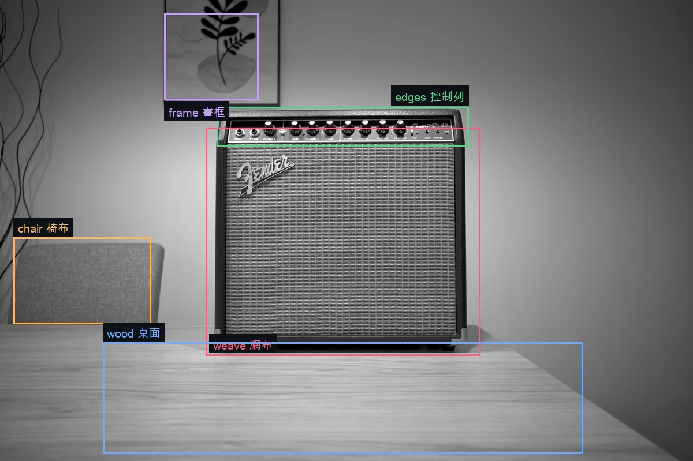
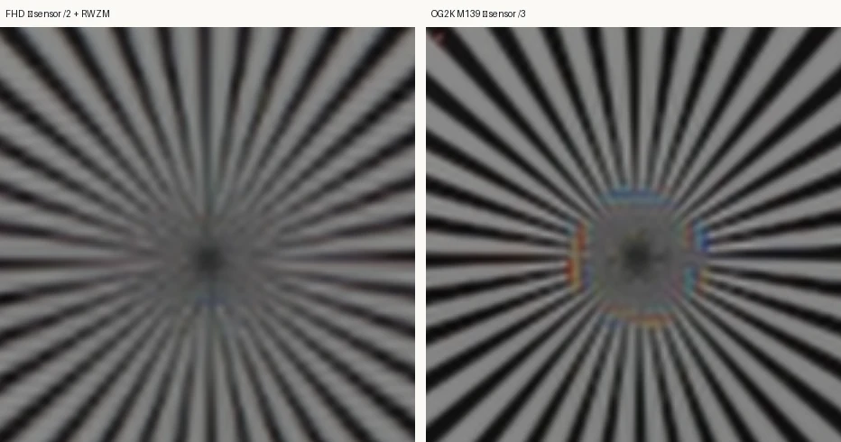
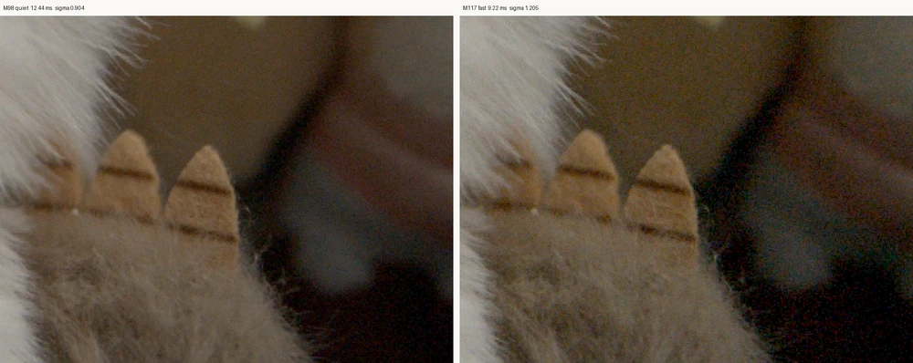
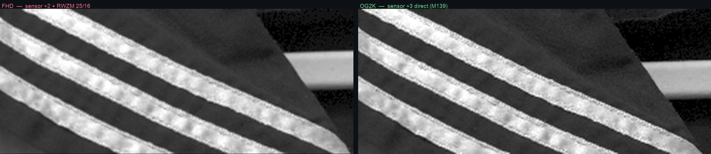

Every description of the fp's reduction modes — ours included — says “sensor 2×2” and “sensor 3×3”. Seven frames of one scene say otherwise. Vertically the IMX410 really does combine rows. Horizontally it never combines anything: it interpolates. The ÷3 mode combines only two rows out of every three. And it averages rather than sums, so none of it buys you light.
所有對 fp 縮減模式的說明 —— 包括我們自己的 —— 都寫「感測器 2×2」和「感測器 3×3」。同一個場景的七張照片說不是。 垂直方向 IMX410 確實在合併列,水平方向它從來沒有合併過任何東西:那是內插。 ÷3 模式每三條同色列只合併兩條。而且它是平均不是相加,所以這些都換不到光。
This page ends up fairly technical, so here is the whole thing in ordinary language before any of that starts.
這一頁後面會變得滿技術的,所以在開始之前,先把整件事用一般的話講完。
The sensor has about 24 million light-collecting cells. A 4K video frame needs about 8 million, FHD needs about 2 million. So before anything reaches the card, a lot of cells have to be turned into fewer numbers. “Pixel binning” is the name for doing that on the sensor itself, and the menu describes the fp's two video modes as “2×2” and “3×3” — which sounds like it takes a square of 4 cells, or 9 cells, and merges each square into one.
感光元件上大約有 2400 萬個收光的小格子。一張 4K 影格只需要大約 800 萬個, FHD 只需要大約 200 萬個。所以在資料寫進記憶卡之前,一定要把很多格子變成比較少的數字。 「像素合併」就是在感光元件上做這件事的名字,而選單把 fp 的兩個錄影模式寫成 「2×2」和「3×3」 —— 聽起來就是把 4 格、或 9 格圍成的一個小方塊, 合併成一個。
If that is what happened, it would be good news. Merging four cells into one means the one you keep has collected four cells' worth of light, so it would be cleaner in the dark, and it would be an honest average of that little square, so fine detail would turn into a smooth blur rather than into something false.
如果真的是這樣,那是好消息。把四格併成一格,代表留下來的那一格收到了 四格份的光,所以暗部會比較乾淨;而且它是那個小方塊的誠實平均,所以太細的細節會變成 平順的模糊,而不是變成假的東西。
Seven photographs of one scene, taken in every mode the camera has, say it does not work like that. Three things are going on, and only the first one is binning at all.
同一個場景、用相機每一個模式各拍一張,總共七張照片,說的是它不是這樣運作的。 實際上有三件事在發生,而其中只有第一件算得上是合併。
In the ÷2 mode, two rows of the sensor genuinely get combined into one, half and half, exactly as you would hope. In the ÷3 mode — the one the menu calls 3×3 — it still only combines two rows, and then throws the third one away. A third of the light that hit the sensor never reaches the file at all, and the detail that was on that row is simply missing.
在 ÷2 模式下,感光元件上的兩條線是真的被合成一條,各佔一半, 和你期望的完全一樣。但在 ÷3 模式 —— 選單上寫 3×3 的那個 —— 它還是只合併兩條,然後把第三條直接丟掉。 打在感光元件上的光有三分之一根本沒有進到檔案裡,那一條線上的細節就是不見了。
Sideways, no cells are combined. Instead the camera picks a position between two neighbouring cells and works out what the brightness there would probably be, by mixing the two in some proportion — like mixing two paints to get a shade in between. Nothing is collected twice; a new number is invented from the numbers next door. That is a perfectly normal thing for a computer to do to a picture, but it is not binning, and it does not gather any extra light.
橫的方向,沒有任何格子被合併。相機做的是:挑一個落在兩個相鄰格子 中間的位置,再按比例把那兩格混起來,算出那個位置「大概應該是多亮」 —— 就像把兩種顏料按比例調出中間色。沒有東西被多收一次, 只是從旁邊的數字生出一個新數字。這對電腦處理圖片來說是很正常的事, 但它不是合併,而且它不會多收到任何光。
Whatever gets combined, the result is divided back down to the original brightness. You can tell because the ÷3 mode is not brighter than the ÷2 mode — if light were really being added up, it would be more than twice as bright. So you do not get the free stop of exposure that people usually expect from binning.
不管合併了什麼,結果都會被除回原來的亮度。怎麼知道的? 因為 ÷3 模式並沒有比 ÷2 模式亮 —— 如果光真的被加起來, 它應該要亮兩倍以上。所以一般人以為合併會白送的那一級曝光,你拿不到。
The sensor does not produce the final frame size on its own. After the binning there is a separate resizing circuit — the firmware calls it RWZM — that shrinks the picture the rest of the way. FHD goes through both: the sensor halves it, then RWZM shrinks it again to 1920 wide. UHD skips the binning and goes through RWZM alone. OG3K and OG2K are the only two modes that go through the sensor and nothing else.
感光元件自己做不出最終的畫面尺寸。合併之後還有一個獨立的縮圖電路 —— 韌體裡叫 RWZM —— 負責把畫面縮到剩下的尺寸。FHD 兩關都走: 感光元件先減半,RWZM 再縮到 1920 寬。UHD 跳過合併,只走 RWZM。 OG3K 和 OG2K 是唯二只經過感光元件、後面什麼都沒有的模式。
That second machine turns out to matter more than the binning does, for two reasons.
而那台第二台機器的影響,其實比合併本身還大,有兩個原因。
First, it shrinks without smoothing first. When you make a picture smaller you are throwing away sample points, and anything in the picture that is finer than the new spacing cannot be recorded — but it does not politely disappear. It comes back as a different, coarser pattern that was never in front of the lens: a fabric weave turns into wide stripes, a brick wall turns into wavy bands, a fine grid picks up colour fringes. The usual cure is to blur the picture slightly before you shrink it, so the too-fine detail is gone before it can misbehave. This circuit does not do that. It just picks its new sample points and interpolates. So all the anti-aliasing a mode gets, it gets from the sensor stage — and if a mode skips the sensor stage, it gets none.
第一,它縮圖之前不先做平滑。把一張圖縮小,等於是在丟掉取樣點, 而畫面裡比新間距還細的東西是記錄不下來的 —— 但它不會乖乖消失。 它會變成一個完全不同的、比較粗的圖案回到畫面上,而那個圖案根本不在鏡頭前面: 布料的織紋變成很寬的條紋、磚牆變成波浪狀的帶子、細格子會冒出彩色的邊。 標準的解法是在縮之前先把畫面稍微模糊一點,讓太細的細節在搗亂之前就先消失。 這個電路沒有做這件事。它就是挑好新的取樣點然後內插。 所以一個模式的抗假紋能力,全部來自感光元件那一關 —— 如果一個模式跳過了感光元件那一關,它就一點都沒有。
Second, it does not shrink every row the same way. To land on sample positions that fall between the input pixels, it keeps sixteen slightly different recipes and rotates through them. Sixteen recipes means row 1, row 2 and row 3 are each handled a little differently, and the pattern comes back around every sixteenth row. On most subjects you would never notice. On fine detail the recipes disagree enough that the sixteen-row cycle prints itself onto the picture — and because every pixel in a row shares a recipe, it prints as horizontal banding. That is the “digital look” people report in FHD, and FHD is the worst case because 1920 happens to be a width that uses all sixteen. Choose a shrink ratio that only uses two of them, and the banding does not appear.
第二,它不是每一列都用同樣的方式縮。為了取到落在輸入像素之間的 取樣位置,它準備了十六套略有不同的做法,輪流使用。十六套做法, 代表第 1 列、第 2 列、第 3 列各自被處理得有一點點不一樣,而這個循環每十六列回來一次。 一般題材你根本不會發現。但在細緻的細節上,這十六套的差異大到會把那個十六列的循環 印在畫面上 —— 而且因為同一列裡的每個像素共用同一套做法,它印出來就是橫向的條帶。 那就是大家說 FHD「有數位感」的東西,而 FHD 是最糟的情況, 因為 1920 這個寬度剛好會把十六套全部用上。 挑一個只會用到其中兩套的縮圖比例,條帶就不會出現。
The two modes that only go through the sensor — OG3K and OG2K — are the cleanest the camera makes, because they never touch the resizing circuit. OG3K, the ÷2 one, is the best of everything measured here. OG2K, the ÷3 one, is close behind on ordinary subjects but falls apart on very fine repeating texture, because of that thrown-away third row. FHD is the softest mode the camera ships, is the dirtiest of them on everyday material, and is the only one that gets the worst grade for banding. Its one real advantage is that it looks less noisy — but that turns out to be the blur talking: match the sharpness and the noise is identical.
只經過感光元件的那兩個模式 —— OG3K 和 OG2K —— 是這台相機做得出來最乾淨的,因為它們完全沒碰到縮圖電路。 ÷2 的 OG3K 是這裡量過的所有東西裡最好的。÷3 的 OG2K 在一般題材上緊追在後, 但在非常細的重複紋理上會崩掉,原因就是被丟掉的那第三條線。 FHD 是出貨模式裡最軟的、在日常素材上最髒的,也是橫紋唯一拿到最差分數的。 它唯一真正的優勢是看起來比較不吵 —— 但那其實是模糊在講話: 把銳利度對齊之後,兩者的雜訊一模一樣。
Everything below is how each of those sentences was measured, and what the numbers are.
底下就是上面每一句話是怎麼量出來的,以及數字各是多少。
Four things, if you read nothing else. The first three are the sensor answering the question in the title; the fourth is the stage immediately after it, which turns out to matter more than the binning does.
只看四件事的話,是這四件。前三件是感測器對標題那個問題的回答; 第四件是它後面那一級 —— 而那一級的影響其實比合併本身更大。
The vertical kernel is an exact equal-weight average of two same-colour rows, and it leaves a fingerprint no resampler can fake: the output rows come out unevenly spaced. The horizontal kernel has unequal weights that mirror between even and odd output columns — the signature of resampling onto a uniform grid. Charge combination cannot produce that. And in these two modes there is no ISP stage to blame it on: both run the resampler at unity with hbin and vbin off, so this is the sensor.
垂直核是兩條同色列的等權重平均,而且留下了一個重取樣器偽造不了的 指紋:輸出列的間距是不均勻的。水平核的權重不等,而且在偶數行和奇數行 之間鏡像 —— 那是「重取樣到均勻網格」的簽名。電荷合併做不出這件事。而這兩個模式 沒有 ISP 級可以推責任:兩者的重取樣器都是 unity、hbin/vbin 都關,所以這就是 感測器本身。
OG2K throws away one same-colour row in every three. That is not an
inference from the pixels alone: the firmware's own merge tuple for those eight
modes is (3,2,3,3), and the lone 2 is the vertical tap
count. The pixels and the ROM table say the same thing.
OG2K 每三條同色列丟掉一條。這不是只從像素推出來的:韌體自己給那八個
模式的 merge tuple 就是 (3,2,3,3),那個孤零零的 2
就是垂直抽頭數。像素和 ROM 表說的是同一件事。
Every clip mode sits 1.32 EV below the 6K still at identical ISO and shutter, and — the part that settles it — OG3K and OG2K sit at the same level. If charge were being summed, ÷3 would be 2.25× brighter than ÷2. It is not, so whatever combines is normalised afterwards — you do not get the free stop that summing charge would hand you. What this test cannot tell you is whether the normalising happens before or after the read: “sum in the charge domain, then divide by two” and “read both rows, then average” produce the same brightness and the same shot noise, and differ only in read noise, in the dark. That distinction is still open.
在完全相同的 ISO 與快門下,每個影片模式都比 6K 靜態暗 1.32 EV,而真正定案的是:OG3K 和 OG2K 的亮度彼此相同。 如果是電荷相加,÷3 會比 ÷2 亮 2.25 倍。它沒有, 所以不管是什麼在合併,後面都做了正規化 —— 電荷相加本來會白送的那一級,你拿不到。 但這個測試分不出來的是正規化發生在讀出之前還是之後: 「電荷域相加再除以二」和「兩列都讀出來再平均」會給出一樣的亮度、一樣的散粒雜訊, 只在暗部的讀出雜訊上不同。這個區分目前還沒解。
All sixteen RWZM phases are two-tap-class interpolators whose width
does not change with the ratio, so a route's resistance to aliasing comes
entirely from the sensor stage. The phases are addressed by
floor(16×frac(nR)), which means a ratio's denominator decides how
many of them are reached: 25/16 reaches all sixteen, so the gain applied to fine
detail changes with output position — 26.1% peak to peak at Nyquist
— while 3/2 reaches two and an integer ratio reaches one.
Pick a denominator of five or less and that variation goes
away.
RWZM 十六個相位全都是 2 抽頭級別的內插核,寬度不隨比例改變,
所以一條路線的抗疊紋能力完全來自感測器那一級。相位是用
floor(16×frac(nR)) 查的,也就是說比例的分母決定了叫得動幾個:
25/16 十六個全開,所以施加在細節上的增益會隨輸出位置改變 ——
到 Nyquist 是 26.1% 峰對峰 —— 而 3/2 只叫得動兩個,整數比例只叫得動一個。
分母挑 5 以下,這個變化就消失。
One frame per mode of the same scene, same lens, same exposure: ISO 400, 1/25 s, f/3.5, 25p, Ver.5.02. A guitar amplifier, because the grille cloth is a dense regular weave — the worst case for any reduction, and therefore the one that separates the candidates.
一個模式一張,同場景、同鏡頭、同曝光:ISO 400、1/25 秒、 f/3.5、25p、Ver.5.02。拍吉他音箱,因為網布是密集的規則織紋 —— 任何縮減方式的 最壞情況,也因此是最能把候選答案分開的題目。
OG3K and OG2K cannot live on the same card, so the session splits in two, with the camera remounted and refocused in between. That split turns out to matter:
OG3K 和 OG2K 不能放在同一張卡上,所以拍攝分成兩次,中間相機下架、 重新對焦。這個分割事後看很重要:
| set組 | frames檔案 | how it aligns to the 6K still和 6K 靜態的對齊方式 |
|---|---|---|
| one第一組 | 6K OG3K 4K FHD |
Integer offset, nothing else. 6K↔OG3K is (3,4) in colour-plane units — sensor (6,8) — at r² = 0.991–0.993. 純整數位移,沒有別的。6K↔OG3K 是色平面座標 (3,4),即 sensor (6,8),r² = 0.991–0.993。 |
| two第二組 | OG2K 4K_set2 FHD_set2 |
Needs an affine. 1.2% magnification difference from the refocus (focus breathing), so OG2K's kernel can only be fitted on small central patches and its detail is one confidence level below OG3K's. 需要仿射。重新對焦造成 1.2% 的放大率差(focus breathing),所以 OG2K 的核只能在小塊中央區域上擬合,細節的可信度比 OG3K 低一階。 |
Three measurements run on those frames. They share no assumptions, so they are allowed to disagree — and where they agree, the answer is not an artefact of any one of them.
在這些影格上跑三種量測。它們不共用假設,所以是可以互相牴觸的 —— 而它們一致的地方,答案就不會是任何單一方法的產物。
| what量什麼 | how怎麼量 | what it is blind to它看不到什麼 |
|---|---|---|
| Kernel核 | Least squares for the output pixel as a linear combination of same-colour source pixels, free taps to ±5. 把輸出像素寫成來源同色像素的線性組合,自由抽頭窗開到 ±5,解最小平方。 | Needs registration. Sub-pixel error smears the answer. 需要配準。次像素誤差會把答案糊掉。 |
| Noise雜訊 | Photon transfer. The slope of variance against signal gives
Neff = 1/Σw², the effective number
of photodiodes behind each output pixel.
光子轉移。變異數對訊號的斜率給出
Neff = 1/Σw²,也就是每個輸出像素
背後實際有效的 photodiode 數。 |
Registration entirely. Says nothing about where the taps are. 完全不管配準。但它也說不出抽頭在哪裡。 |
| Geometry幾何 | Sub-pixel phase between the G1 and G2 planes inside one frame. 同一張影格內,G1 平面對 G2 平面的次像素相位。 | Any external reference. Only sees the sampling grid, not the weights. 不需要任何外部參考。但它只看得到取樣網格,看不到權重。 |
For OG3K the three land on the same answer: the fitted kernel gives Σw² = 0.291, so Neff = 3.44; the noise measurement, which never saw the kernel, gives 3.48. One per cent apart.
OG3K 上三者落在同一個答案:擬合出來的核給 Σw² = 0.291,即 Neff = 3.44; 從頭到尾沒看過那顆核的雜訊量測給 3.48。差 1%。
quality-tests-frames-public參考素材組:quality-tests-frames-publicEvery kernel on this page was fitted from one small set of stills shot and published by Jose, made for exactly this purpose and released with the camera serial removed. It is worth describing properly, because the care in how it was taken is what makes the fits possible at all — and because the shortcuts it declares are as useful as the data.
這頁上每一顆核,都是從 Jose 拍攝並公開的一小組靜態照片擬合出來的。 那組照片就是為此而拍,並在移除相機序號後釋出。值得好好介紹,因為它拍攝時的講究才讓 這些擬合成為可能 —— 而且它自己聲明的取捨,和資料本身一樣有用。
| Subject被攝體 | A guitar amplifier — the grille cloth is the high-frequency pattern一台吉他音箱 —— 網布就是那個高頻圖樣 |
| Lens鏡頭 | Sigma 24mm Contemporary @ f/3.5, fixed focus固定對焦 |
| Exposure曝光 | ISO 400, 1/25 s — identical on every take每一次拍攝完全相同 |
| Depth位深 | clips 12-bit, stills 14-bit影片 12-bit,靜態 14-bit |
| Firmware韌體 | Ver.5.02 + fpSup |
| file檔案 | output輸出 | reduction, as the set describes it縮減方式,依該組自述 |
|---|---|---|
6K.DNG | 6064×4042 | none — sensor read 1:1. The reference無 —— 感測器 1:1 讀出。基準 |
4K.DNG | 3856×2170 | sensor 1×1, then ISP 25/16感測器 1×1,再 ISP 25/16 |
OG3K.DNG | 3024×2010 | sensor 2×2感測器 2×2 |
OG2K.DNG | 2016×1344 | sensor 3×3感測器 3×3 |
FHD.DNG | 1936×1090 | sensor 2×2 and then ISP 25/16感測器 2×2 再 ISP 25/16 |
4K_set2, FHD_set2 | — | the same modes in the second set — the control for the remount第二組裡的同樣模式 —— 重新架機的對照組 |

Two things in it deserve singling out. It ships its own control. OG3K and OG2K share a menu slot and cannot live on the same card, so the session splits in two with a remount and a refocus in between — and rather than leave that as an unknown, the set repeats 4K and FHD in the second half so the remount itself can be measured. On that session the difference came out around 5% with no consistent sign. That is what makes cross-set comparison defensible, and it is also what let the 1.2% magnification difference behind OG2K's harder fit be identified rather than guessed at.
裡面有兩件事值得特別指出。它自帶對照組。OG3K 和 OG2K 共用一個選單 欄位,不能放在同一張卡上,所以拍攝分成兩次,中間重新架機、重新對焦 —— 而它沒有把這件事留成未知數,而是在後半段重複拍了 4K 和 FHD,讓重新架機本身可以被量。 那一次量出來約 5%,而且沒有一致的正負號。這才讓跨組比較站得住腳, 也讓 OG2K 較難擬合背後那 1.2% 的放大率差是被指認出來的,而不是猜的。
And it says what it did to the files. The serial number was zeroed
in four places, including the binary prefix inside ImageUniqueID and
RawDataUniqueID — but the files were not rewritten. Those bytes were
patched in place, everything else is byte-identical including the image data,
and that was verified by decoding the raw from both and comparing.
Software: SIGMA fp Ver.5.02.0.V91 is preserved. A set that had been
re-saved through a converter would have been useless for fitting a kernel; this one
states that it was not, and how it knows.
而且它說明了對檔案做過什麼。序號在四個地方被歸零,包括
ImageUniqueID 和 RawDataUniqueID 內嵌的二進位前綴 ——
但檔案沒有被重寫。那些位元組是就地修補的,其餘一切逐位元相同,包括影像資料,
而且是用「兩邊各解一次 raw 再比對」驗證過的。Software: SIGMA fp Ver.5.02.0.V91
保留著。一組被轉檔器重新存過的檔案拿來擬合核是沒有用的;這一組聲明了它沒有,
並且說明了它怎麼知道。
Its own caveats, kept as written: f/3.5 is wide open on that lens and its weakest point off-axis, so corner behaviour says less than it could and a repeat at f/5.6 would be more conclusive. Stills are 14-bit and clips 12-bit, so normalise before comparing noise. And crop mode leaves no trace in the metadata — a cropped UHD frame and a full-frame one carry identical dimensions and tags, so it has to be measured on the image.
它自己的但書,照原文保留:f/3.5 是那顆鏡頭的全開光圈,也是它離軸最弱的地方, 所以邊角的表現說明力有限,在 f/5.6 重拍一次會更有結論。靜態是 14-bit、影片是 12-bit, 比雜訊前要先正規化。還有裁切模式在 metadata 裡不留任何痕跡 —— 一張裁切過的 UHD 和一張全幅的,尺寸和標籤完全相同,只能從影像上量。
The set is 79 MB of DNG and is not hosted here. Its own README carries the table above; this page adds the measurements.
該組是 79 MB 的 DNG,沒有放在這裡。上面那張表來自它自己的 README;這一頁補上的是量測。
The cleanest evidence needs no reference frame at all. In a Bayer array the two green planes sit on a quincunx: G1 at (even row, odd column), G2 at (odd row, even column), so G2 is offset from G1 by exactly half a plane step in each axis. Measure that offset in each mode and the 6K still is its own control.
最乾淨的證據完全不需要參考影格。Bayer 陣列裡兩個綠色平面呈梅花狀: G1 在(偶數列, 奇數行)、G2 在(奇數列, 偶數行),所以 G2 相對 G1 在兩軸上各差 恰好半個平面步長。每個模式量一次這個位移,6K 靜態就是它自己的對照組。
| frame檔案 | G1→G2 verticalG1→G2 垂直 | G1→G2 horizontalG1→G2 水平 | reading判讀 |
|---|---|---|---|
6K | −0.500 | +0.469 | textbook — the control教科書 —— 對照組 |
4K | −0.498 | +0.442 | resampled, geometry intact重取樣過,幾何完好 |
4K_set2 | −0.498 | +0.491 | same同上 |
OG3K | −0.248 | +0.480 | vertical halved, horizontal normal垂直減半,水平正常 |
OG2K | −0.503 | +0.388 | both uniform — see below兩軸都均勻 —— 見下 |
FHD | −0.362 | +0.434 | inherits OG3K's error, diluted繼承了 OG3K 的誤差,被稀釋 |
Nine tiles across the grille give OG3K a vertical phase between −0.24 and −0.26 every time. A value of 0.25 instead of 0.5 has exactly one cause: the R/G1 output row is centred between two even sensor rows and the G2/B output row between two odd ones, which leaves the two Bayer row phases one sensor row apart instead of two.
網布區九塊 tile,OG3K 的垂直相位每次都落在 −0.24 到 −0.26 之間。量到 0.25 而不是 0.5,只有一個原因:R/G1 輸出列的中心落在兩條偶數 sensor 列 中間,G2/B 輸出列落在兩條奇數列中間,於是兩個 Bayer 列相位只差一條 sensor 列,而不是兩條。
For a ÷3 mode this test goes quiet: with an odd factor a symmetric bin centres on a photosite, so binning and resampling both give an even grid. OG2K's 0.503 therefore proves nothing either way, and the kernel and the noise have to carry that mode on their own.
對 ÷3 模式這個測試就啞了:因子是奇數時,對稱的合併中心 會落在 photosite 上,所以合併和重取樣都會給出均勻網格。OG2K 的 0.503 因此兩邊都 證明不了,那個模式只能靠核與雜訊撐。
Free-tap least squares on the grille, per CFA channel, at r² ≈ 0.993. Side lobes under 0.01 in every channel:
網布區的自由抽頭最小平方,逐 CFA 通道,r² ≈ 0.993。 四個通道的旁瓣都在 0.01 以下:
| channel通道 | −2 | −1 | 0 | +1 | +2 | +3 |
|---|---|---|---|---|---|---|
| R | 0.003 | −0.004 | 0.498 | 0.493 | 0.003 | 0.007 |
| G1 | 0.005 | −0.009 | 0.501 | 0.495 | 0.001 | 0.007 |
| G2 | 0.007 | −0.008 | 0.499 | 0.494 | 0.002 | 0.007 |
| B | 0.006 | −0.001 | 0.490 | 0.497 | 0.004 | 0.004 |
The same fit, read across instead of down:
同一次擬合,橫著讀而不是直著讀:
| channel通道 | output column輸出行 | −2 | −1 | 0 | +1 | +2 | +3 |
|---|---|---|---|---|---|---|---|
| R | even偶 | 0.018 | −0.014 | 0.712 | 0.259 | 0.005 | 0.020 |
| G2 | even偶 | 0.015 | −0.017 | 0.725 | 0.259 | 0.000 | 0.018 |
| G1 | odd奇 | 0.002 | 0.009 | 0.219 | 0.745 | 0.020 | 0.006 |
| B | odd奇 | 0.010 | 0.013 | 0.222 | 0.715 | 0.027 | 0.013 |
4t + 8.53
and G1 at 4t + 10.54 — 2.01 sensor columns
apart. A uniform output grid predicts 2. Pair-wise binning predicts 1. A global
misalignment cannot explain it, because a shift moves both channels equally and
leaves the difference alone.
偶數行和奇數行的權重是鏡像的。把權重換算成 sensor 座標:
R 的取樣中心在 4t + 8.53、G1 在
4t + 10.54 —— 相隔 2.01 個 sensor 行。
均勻輸出網格預測 2,成對合併預測 1。全域配準誤差解釋不掉,因為平移會讓兩個通道
一起移動,差值不變。
So each output pixel is a linear interpolation between the two nearest same-colour photosites, positioned on an evenly spaced grid. Charge combination cannot produce unequal weights, and certainly not weights that flip with column parity.
所以每個輸出像素是「最近兩個同色 photosite 之間的線性內插」,格點擺在 均勻網格上。電荷合併給不出不等的權重,更給不出會隨行號奇偶翻轉的權重。
| model模型 | R | G1 | G2 | B |
|---|---|---|---|---|
| V = bin 2 rows · H = 2-tap interpolation垂直 = 併 2 列 · 水平 = 2 抽頭內插 | 0.9918 | 0.9910 | 0.9932 | 0.9916 |
| V = bin 2 rows · H = bin 2 columns垂直 = 併 2 列 · 水平 = 併 2 行 | 0.9769 | 0.9713 | 0.9797 | 0.9728 |
| V = bin 2 rows · H = skip垂直 = 併 2 列 · 水平 = 跳行 | 0.9675 | 0.9766 | 0.9729 | 0.9724 |
| V = interpolate · H = interpolate垂直 = 內插 · 水平 = 內插 | 0.9293 | 0.9310 | 0.9370 | 0.9351 |
Residual variance under the correct model is a third of what a true 2×2 box leaves behind. The remaining error is mostly the two frames' own independent noise.
正確模型的殘差變異數只有「真 2×2 盒濾波」留下來的三分之一。 剩下的誤差多半是兩張影格各自獨立的雜訊。
Second set, affine registration, r² ≈ 0.93 on a central 100×100 patch. One confidence level below OG3K — but the pipeline was checked by feeding it synthetic frames built with known kernels, where it returns r² = 0.9999 and recovers the weights to three decimals. The 0.93 is registration error, not model error.
第二組拍的,仿射配準,中央 100×100 區塊 r² ≈ 0.93。可信度比 OG3K 低一階 —— 但這條管線用已知核合成的 影像檢查過,回來是 r² = 0.9999、權重還原到小數第三位。所以 0.93 是配準誤差,不是模型錯。
| channel通道 | vertical, at sensor offsets −4 −2 0 +2 +4垂直,sensor 偏移 −4 −2 0 +2 +4 | ||||
|---|---|---|---|---|---|
| R | 0.101 | 0.496 | 0.380 | 0.020 | 0.003 |
| G1 | 0.030 | 0.508 | 0.464 | −0.001 | 0.000 |
| G2 | −0.005 | 0.490 | 0.494 | 0.020 | 0.001 |
| B | 0.004 | 0.487 | 0.485 | 0.027 | −0.003 |
3v + 28 with taps at −2 and 0, so even output
rows use sensor rows {26,28} {32,34} {38,40} — rows 30
and 36 are never read. Of every six sensor rows, two even and two odd are binned and
one of each is discarded.
兩個抽頭,不是三個。輸出列中心大約在
3v + 28,抽頭在 −2 和 0,所以偶數輸出列用
sensor 列 {26,28} {32,34} {38,40} —— 第 30 和 36 列從來
沒被讀。每六條 sensor 列裡,兩偶兩奇被合併,各丟掉一條。
Horizontally it is a symmetric three-tap
[1 2 1] / 4 — the G2 profile reads
0.06 0.21 0.44 0.24 0.05.
水平則是對稱的三抽頭
[1 2 1] / 4 —— G2 的剖面讀起來是
0.06 0.21 0.44 0.24 0.05。
| model模型 | R | G1 | G2 | B |
|---|---|---|---|---|
| V = bin 2 rows · H = [1 2 1]/4垂直 = 併 2 列 · 水平 = [1 2 1]/4 | 0.9259 | 0.9205 | 0.9231 | 0.9249 |
| V = bin 2 rows · H = bin 2 columns垂直 = 併 2 列 · 水平 = 併 2 行 | 0.9146 | 0.9102 | 0.9126 | 0.9140 |
| true 3×3 box — what everyone assumed真 3×3 盒濾波 —— 大家一直以為的 | 0.8933 | 0.8502 | 0.8487 | 0.8589 |
| V = bin 3 rows · H = [1 2 1]/4垂直 = 併 3 列 · 水平 = [1 2 1]/4 | 0.8906 | 0.8516 | 0.8526 | 0.8607 |
| V = bin 2 rows · H = skip垂直 = 併 2 列 · 水平 = 跳行 | 0.8554 | 0.8668 | 0.8731 | 0.8651 |
Every clip mode sits 1.32 EV below the 6K still at identical ISO and
shutter — mean ratios 0.399 / 0.392 / 0.406 / 0.410 across RGGB, and the DNGs
record BaselineExposure 2 against 0.678, a difference of 1.32.
在完全相同的 ISO 與快門下,每個影片模式都比 6K 靜態暗
1.32 EV —— RGGB 四通道的平均值比是 0.399 / 0.392 / 0.406 / 0.410,而 DNG 裡的
BaselineExposure 是 2 對 0.678,差 1.32。
The part that settles it is that OG3K and OG2K sit at the same level (127.1 against 124.8). If charge were being summed, ÷3 would be 2.25× brighter than ÷2. It is not, so whatever combines is normalised afterwards.
真正定案的是 OG3K 和 OG2K 的亮度彼此相同(127.1 對 124.8)。 如果是電荷相加,÷3 會比 ÷2 亮 2.25 倍。它沒有,所以不管是什麼在合併, 後面都有正規化。
Two numbers per mode. Neff is how many
photodiodes are effectively behind each output pixel. The alias figure is the mean
gain the prefilter still has over the fold-back band — the energy that lands on
top of real detail and cannot be removed afterwards.
每個模式兩個數字。Neff 是每個輸出像素
背後實際有效的 photodiode 數。疊紋那個數字是前濾波器在折疊帶上還剩多少增益 ——
那些能量會疊在真實細節上面,事後拿不掉。
| mode模式 | Neff measuredNeff 實測 | nominal名目 | noise shortfall雜訊落差 | alias, vertical疊紋,垂直 | alias, horizontal疊紋,水平 |
|---|---|---|---|---|---|
| OG3K ÷2 | 3.27 / 3.48 / 3.34 / 3.52 | 4 | −0.13 EV | 0.372 | 0.591 |
| OG2K ÷3 | 5.35 / 5.05 / 4.96 / 5.64 | 9 | −0.38 EV | 0.477 | 0.293 |
| ideal box ÷2理想盒濾波 ÷2 | 4 | 4 | — | 0.305 | 0.305 |
| ideal box ÷3理想盒濾波 ÷3 | 9 | 9 | — | 0.231 | 0.231 |
Two things worth sitting with.
兩件值得停下來想一下的事。
The noise shortfall is small. A tenth to a third of a stop. “It is not really combining four photodiodes” sounds alarming and converts to almost nothing. The real cost is aliasing.
雜訊的落差很小。十分之一到三分之一級。「它其實沒有真的合併四個 photodiode」聽起來很嚴重,換算出來幾乎是零。真正的代價是疊紋。
The weak axis is opposite in the two modes. OG3K's two-row average has an exact null at the source Nyquist — vertically it is a textbook ÷2 prefilter — while horizontally the two-tap interpolation still passes about half. OG2K is the other way round, and worse: a two-tap average cannot prefilter a ÷3 decimation at all, so the fold at ν = ⅓ still carries 0.5. OG3K moirés horizontally, OG2K moirés vertically.
兩個模式的弱軸剛好相反。OG3K 的兩列平均在來源 Nyquist 處是精確 零點 —— 垂直方向它是教科書等級的 ÷2 前濾波 —— 而水平的兩抽頭內插在那裡還過 大約一半。OG2K 反過來,而且更糟:兩抽頭平均根本擋不住 ÷3 的抽樣, ν = ⅓ 的折疊還帶著 0.5 的增益。 OG3K 橫向摩爾紋,OG2K 縱向摩爾紋。
Horizontal interpolation instead of binning is not pure loss: it keeps more horizontal detail than a true 2×2 would (0.79 against 0.707 at Nyquist). It is sharpness traded for aliasing, not sharpness thrown away.
水平用內插而不是合併,不是純虧:它比真 2×2 保留了更多水平 細節(Nyquist 處 0.79 對 0.707)。那是拿銳利度換疊紋,不是把銳利度丟掉。
Hbin, Vbin, Hbin2 and RWZM
establishes from the firmware that FHD is the ÷2 sensor mode feeding the
resampler at 1600 / 1024 = 1.5625×. That makes
OG3K → FHD a measurement of the resampler with no sensor
modelling in it at all — and both frames are in set one, so they align
exactly.
Hbin, Vbin, Hbin2 and RWZM
那頁從韌體確認了 FHD 是 ÷2 感測器模式餵進
1600 / 1024 = 1.5625× 的重取樣器。這讓
OG3K → FHD 成為一次完全不含感測器建模的重取樣器量測 ——
而且兩張都在第一組,對得起來。
r² = 0.99923. Sixteen phases solved separately:
r² = 0.99923。十六個相位分開解:
frac(25p/16 + C) with a constant residual
of −0.41 ± 0.02.frac(25p/16 + C),殘差是常數
−0.41 ± 0.02。A cross-check that costs nothing: push white noise through the measured kernels and read it with the same estimator used on the real files.
一個不花成本的交叉檢查:把白雜訊餵過量到的核,再用跑真檔案時同一個 估計器去讀。
| mode模式 | predicted reading模型預測讀數 | measured實測 |
|---|---|---|
4K — sensor 1:1 + RWZM 25/16感測器 1:1 + RWZM 25/16 | 4.52 | 4.69 |
FHD — sensor ÷2 + RWZM 25/16感測器 ÷2 + RWZM 25/16 | 14.9 | 16.5 / 20.5 |
FHD inherits OG3K's paired row grid. The resampler assumes its input is evenly spaced, and it is not — FHD measures −0.362 where the ideal is −0.5 and OG3K is −0.248. The error is diluted, not removed.
FHD 繼承了 OG3K 的成對列網格。重取樣器假設輸入是均勻的,而它不是 —— FHD 量到 −0.362,理想是 −0.5、OG3K 是 −0.248。誤差被稀釋, 沒有被移除。
Every setting on the sensor lists four merge tuples across the 70 modes and says of them: “The last two are confirmed as effective X/Y geometry scale — but that proves a coordinate ratio and says nothing about whether charge is combined or rows are skipped. The first two are not pinned down at all.”
Every setting on the sensor 那頁列出 70 個模式裡的四種 merge tuple,並且說:「後兩個確認是有效的 X/Y 幾何 縮放 —— 但那只證明一個座標比例,說不出是電荷被合併還是列被跳過。前兩個完全沒有 釘死。」
The first two are the per-axis tap counts. The pixels say so:
前兩個就是每軸的抽頭數。像素是這樣說的:
| tuple | modes模式數 | what the frames show影格量到什麼 | |
|---|---|---|---|
(1,1,1,1) | 23 | — | |
(2,2,2,2) | 36 | OG3K: 2 taps horizontal, 2 rows verticalOG3K:水平 2 抽頭、垂直 2 列 | matches對上 |
(3,2,3,3) | 8 | OG2K: 3 taps [1 2 1]/4 horizontal, 2 rows verticalOG2K:水平 3 抽頭 [1 2 1]/4、垂直只有 2 列 |
matches對上 |
(3,3,3,6) | 3 | not measured — the 3×6 mode未量測 —— 3×6 模式 | open待解 |
The lone 2 in (3,2,3,3) is the same
“only two rows” the kernel fit found. That is not a reading of the pixels
agreeing with a guess — it is a ROM table and a photograph, taken independently,
saying the same number.
(3,2,3,3) 裡那個孤零零的 2,就是核
擬合找到的「只有兩列」。這不是像素去附和一個猜測 —— 這是一張 ROM 表和一張照片,
各自獨立地說出同一個數字。
The measurement adds what the table cannot: vertical is a real average
and horizontal is a phase-aware resample. The registers on that page
(0x001C selecting 1×/2×/3×, the 0x0717
group holding twice the merge factor, 0x0058 enabling it) only carry a
factor. None of them carries tap weights, which is what you would expect if
the horizontal path is a fixed resampler rather than a combining circuit.
量測補上了表格給不了的東西:垂直是真的平均,水平是相位感知的
重取樣。那頁上的暫存器(0x001C 選 1×/2×/3×、
0x0717 群組存兩倍的 merge factor、0x0058 開關)只帶
倍率。沒有一個帶抽頭權重 —— 如果水平那條路是固定的重取樣器而不是合併
電路,這正是你會預期看到的。
+0x64/+0xD4 is
0x3FF from the factory, and OG2K uses profile 13, where all
four columns are already 1023. Both clamp to 1.0×. So
between the photodiodes and the card there is nothing: the kernels above are
the IMX410's own reduction, not an ISP stage wearing its name.
這兩個模式在路徑上沒有別的東西。OG3K 和 OG2K 的重取樣器都是
unity,hbin 和 vbin 完全不碰 —— OG3K 借 profile 83,它的 RAW RWZM 那一對
+0x64/+0xD4 原廠就是 0x3FF;OG2K 用
profile 13,四欄原廠就是 1023。兩者都會被夾到
1.0×。所以從 photodiode 到卡片之間什麼都沒有:上面那些核就是 IMX410
自己的縮減,不是某個披著它名字的 ISP 級。
That resolves what would otherwise be a real ambiguity, because OG2K's
horizontal [1 2 1]/4 is exactly the hbin
coefficient record 0 documented on the
frame-reduction page. With hbin off, that is a coincidence of two designers
reaching for the same canonical three-tap, not the same block. And the pixels agree
independently: if either ISP stage had run, its overlapping support would have
correlated the noise, and the kernel-derived and noise-derived
Neff would not have landed within one per cent of each other — which
is exactly the discrepancy the 4K and FHD paths do show.
這解掉了一個本來會很真實的歧義,因為 OG2K 的水平
[1 2 1]/4 恰好就是
frame-reduction 那頁記載的 hbin 係數
record 0。hbin 既然是關的,那就是兩個設計者都伸手拿了同一顆經典三抽頭,
不是同一個區塊。而且像素自己也同意:只要任何一個 ISP 級跑過,它重疊的支撐就會讓
雜訊相關,核算出來的 Neff 和雜訊量出來的就不會落在 1% 以內 ——
而那正是 4K 和 FHD 這兩條路徑真的呈現出來的落差。
This section compares the two shipping open-gate modes against the routes nearest to them. It was written before the resampler's phase table was unscrambled, and the conclusions it reaches are narrower than the ones that follow. For the full ranking — every route, on five materials, with perfect ×2 and ×3 as reference lines — go to Ranking every route.
這一節把兩個出貨的 open gate 模式和最接近它們的路線放在一起比。 它寫在重取樣器的相位表被解開之前,得到的結論比後面那些窄。 要看完整排名 —— 每條路線、五塊材質、加上完美 ×2 / ×3 參考線 —— 請看把每條路線排出來。
If the ÷3 mode only bins two rows, the obvious question is whether a true 3×3 can be built — and whether it would even be the best option. Both are answerable with the measured kernels.
如果 ÷3 模式只合併兩列,接下來的問題當然是:真的 3×3 做得 出來嗎,以及就算做出來是不是最好的選擇。兩個問題用量到的核都答得了。
Every candidate below is built from the 6K frame with its measured kernels and scored the same way. Aliasing is the incoherent residual — the part of the error no sharpening can recover — against an ideal Lanczos-3 sampled at the route's own output positions, so the number carries no alignment term at all. Six output phases per route; the median is shown and the spread is under ±0.2 points.
下面每個候選都是從 6K 影格用量到的核建出來,用同一把尺計分。 疊紋是非相干殘差 —— 誤差裡任何銳化都救不回來的那一部分 —— 對照組是理想的 Lanczos-3,而且在路線自己的輸出位置上取樣,所以這個數字完全不含對齊項。 每條路線掃六個輸出相位,表上是中位數,離散度在 ±0.2 個百分點以內。
| route路線 | weave織紋 | ordinary一般素材 | Neff | rolling shutter捲簾 |
|---|---|---|---|---|
| R1 — sensor ÷2 direct感測器 ÷2 直接 | 3.9% | 0.7% | 3.28 | 12.44 / 9.22 ms |
| R2 — full read + RWZM 2048全讀出 + RWZM 2048 | 9.3% | 2.2% | 2.63 | 24.98 ms |
The full-read route loses on every axis. More than twice the aliasing, less signal averaging, twice the rolling shutter, and it needs 880–1100 MB/s off the sensor instead of 220–275. For open gate 3K there is nothing to decide: read the sensor at ÷2. The only open choice is which ÷2 mode, which is a timing question, not an image one.
全讀出那條每一項都輸。疊紋兩倍有餘、平均的訊號更少、捲簾兩倍,而且 感測器端要 880–1100 MB/s 而不是 220–275。open gate 3K 沒什麼好選的: 就用感測器的 ÷2。剩下的唯一選擇是哪一個 ÷2 模式,那是時序 問題,不是畫質問題。
| route路線 | weave織紋 | ordinary一般素材 | Neff | model模型 |
|---|---|---|---|---|
| S1 — sensor ÷3 direct — ships today感測器 ÷3 直接 —— 現行出貨 | 22.7% | 2.7% | 5.32 | exact — no resampler精確 —— 無重取樣器 |
| FHD — sensor ÷2 + RWZM 25/16感測器 ÷2 + RWZM 25/16 | 13.8% | 6.2% | 10.62 | per-phase逐相位 |
| S2 — sensor ÷2 + RWZM 1536 (3/2)感測器 ÷2 + RWZM 1536(3/2) | 10.2% | 7.3% | 10.23 | per-phase — only entries 0 and 8逐相位 —— 只用到第 0、8 格 |
| S1b / S1c — a deeper vertical bin垂直併更多列 | 6.7% / 6.2% | 0.8% / 0.6% | 7.97 / 9.02 | no known mechanism無已知機制 |
Neither shipping mode dominates the other, and the split is not where you would guess. On the weave — an extreme, dense cloth sitting at the sensor's Nyquist — FHD is better, 13.8% against 22.7%. On everything else FHD is more than twice as dirty: 6.2% against 2.7%. Since ordinary footage is mostly ordinary material, that second row is the one that describes what people see, and it is the one that matches what they report.
兩個出貨模式沒有一個全面勝過另一個,而且分界不在你會猜的地方。 在織紋上 —— 一塊極端密集、正好落在感測器 Nyquist 上的布 —— FHD 較好, 13.8% 對 22.7%。其他所有素材上 FHD 髒了兩倍以上:6.2% 對 2.7%。 既然一般拍攝多半是一般素材,第二行才是描述大家看到什麼的那一行, 也是和大家回報吻合的那一行。
And the row that was blank is now filled, though not in its favour. S2 — the same cascade at ratio 3/2 instead of 25/16 — halves FHD's weave figure and carries none of its phase-to-phase gain variation, because 3/2 addresses only two of the sixteen phases. But on ordinary material it is 7.3%, the worst route on this page. It keeps FHD's deep averaging and buys nothing else. Why it became computable at all is further down.
而原本空著的那一列填上了,只是填出來的結果對它不利。 S2 —— 同一條串接,比例換成 3/2 而不是 25/16 —— 把 FHD 的織紋數字砍半, 而且因為 3/2 只叫得動十六個相位裡的兩個,完全沒有那種週期 16 的橫紋。 但在一般素材上它是 7.3%,本頁最差的一條。 它保住了 FHD 那份深度平均,其他什麼都沒換到。 它為什麼變得算得出來在本頁後面。
The noise side is unchanged, because it was measured rather than simulated: the cascade averages about twice the photodiodes, Neff 10.8 against 5.34, confirmed to 5% on unrelated footage.
雜訊那一側不變,因為它是量的不是模擬的:串接平均的 photodiode 約為兩倍, Neff 10.8 對 5.34,在不相干的素材上驗證到 5% 以內。
S1 → S1b is only one change — bin three rows instead of two — and weave aliasing falls from 22.7% to 6.7%. A textbook 3×3 then buys a further 0.5 points. Fixing the horizontal is not worth doing.
S1 → S1b 只動了一件事 —— 併三列而不是兩列 —— 織紋疊紋就從 22.7% 掉到 6.7%。教科書 3×3 再往下也只多 0.5 個百分點。 去修水平那條路不值得。
With the phases handled one at a time this stopped being a tie. S2 is 10.2% on the weave against S1b's 6.7% and S1c's 6.2% — a deeper vertical bin would alias less — and its apparent compensation, Neff 10.2 against 8.0 and 9.0, turns out not to be real compensation at all: matched for sharpness that noise advantage disappears. What S2 still has over the other two is that it needs no sensor change, which is a reason to build it, not a reason to prefer the picture it makes. The full ranking is below.
相位逐條處理之後,這裡已經不是打平。S2 在織紋上是 10.2%, 對 S1b 的 6.7% 和 S1c 的 6.2% —— 垂直併更多列的疊紋會更低 —— 而它表面上的補償,Neff 10.2 對 8.0 和 9.0,其實不是補償: 銳利度對齊之後那個雜訊優勢就消失了。S2 對另外兩條真正的優勢是它不需要動感測器, 那是「做得出來」的理由,不是「畫面比較好」的理由。 完整排名在下面。
A fixed 1.20-wide kernel asked to do ÷3 barely prefilters, so S3 is worse than what ships today and costs five times the sensor bandwidth. The same failure would sink hbin/vbin on record 1, whose centre tap carries 87.5%. What separates the good routes from the bad ones is not which block does the work — it is whether the kernel is wide enough for the ratio it is being asked to perform.
一顆固定半寬 1.20 的核被叫去做 ÷3,幾乎沒有前濾波,所以 S3 比現行出貨的還糟,而且感測器頻寬要五倍。hbin/vbin 若用 record 1 也會栽在同一件事上 —— 它的中心抽頭佔 87.5%。分開好路線和壞路線的不是哪個區塊 在做事,而是那顆核對它被要求的比例夠不夠寬。
The reason the cascade works is that only one of its two stages is doing the filtering. The sensor's two-row average has its null exactly at the source Nyquist, which makes it a perfect ÷2 prefilter. RWZM adds essentially nothing — every one of its sixteen phases is a two-tap-class interpolator, and the width does not change with the ratio. So the cascade is a ÷2 prefilter followed by a resize that does not filter, which is fine for the remaining ×1.5 and hopeless if you ask the same kernel to do a ÷3 on its own. What separates the routes is not which block does the work. It is whether a real prefilter happened anywhere in the path.
串接之所以成立,是因為兩段裡只有一段在做濾波。感測器的兩列平均, 零點恰好在來源 Nyquist,是一個完美的 ÷2 前濾波。RWZM 幾乎什麼都沒加 —— 它十六個相位每一條都只是 2 抽頭級別的內插核,而且寬度不隨比例改變。 所以串接其實是一個 ÷2 前濾波,後面接一個不濾波的縮放: 對剩下的 ×1.5 沒問題,但叫同一顆核自己去做 ÷3 就完全不行。 分開好壞路線的不是哪個區塊在做事,而是這條路徑上到底有沒有發生過真正的前濾波。
Of the 70 sensor modes, 20 are full-FOV 3:2 — raster times geometry scale lands back on 6064×4042. The rest are crops, 16:9 windows, or both. Readout tier comes from hmax: the firmware treats ≤395 as fast and ≥445 as normal, and rolling shutter is hmax × height / 72 MHz.
70 個感測器模式裡,20 個是 full-FOV 3:2 —— 光柵乘上幾何縮放會 回到 6064×4042。其餘的是裁切、16:9 視窗,或兩者皆是。讀出檔位由 hmax 決定: 韌體把 ≤395 當 fast、≥445 當 normal,捲簾是 hmax × 高度 / 72 MHz。
| raster光柵 | modes模式 | hmax | tier檔位 | fps ceilingfps 上限 | rolling捲簾 |
|---|---|---|---|---|---|
| 6064×4042 | 3 / 97 / 121 / 142 | 445 | quiet | 29.97 / 39.16 / 25 / 18 | 24.98 ms |
| 6064×4042 14-bit14-bit | 0 / 141 | 911 | quiet | 19.13 / 18 | 51.14 ms |
| 3032×2012 | 98 / 143 | 445 | quiet | 77.27 / 18 | 12.44 ms |
| 3032×2012 | 11 / 117 | 330 | fast | 105.40 / 99.90 | 9.22 ms |
| 2016×1344 | 139 | 445 | quiet | 59.93 | 8.31 ms |
| 2016×1344 | 8 / 56 / 148 / 149 / 150 | 330 | fast | 59.94 – 119.88 | 6.16 ms |
| 2016×1344 | 147 | 395 | fast | 100.15 | 7.37 ms |
| 2016×672 (3,3,3,6)(3,3,3,6) | 140 | 445 | quiet | 59.93 | 4.15 ms |
| 2016×672 (3,3,3,6)(3,3,3,6) | 9 / 12 | 330 | fast | 59.94 / 239.76 | 3.08 ms |
The shipping products use mode 98 for OG3K and mode 139 for OG2K — both quiet. So every kernel on this page is a quiet-tier measurement.
出貨的產品 OG3K 用 mode 98、OG2K 用 mode 139, 都是 quiet 檔。所以這頁上每一顆核都是 quiet 檔的量測。
| route路線 | rolling捲簾 | fpsfps | what it costs代價 | |
|---|---|---|---|---|
| keep維持 | M98 direct | 12.44 ms | 77 | nothing. This is what ships.沒有。這就是現行出貨。 |
| rolling捲簾優先 | M117 direct | 9.22 ms | 100 | 1.33× the noise — see below1.33 倍雜訊 —— 見下 |
| frame rate高格率 | M11 direct | 9.22 ms | 105 | same, and 50p already needs 458 MB/s同上,而且 50p 就要 458 MB/s |
M117 and M11 share M98's raster and its merge tuple, so the spatial kernel should be identical and the 26% better rolling shutter ought to be free. What differs is the readout timing, and therefore read and pattern noise. The project notes have carried that as an open question for months, with the fast tier treated as the risky choice.
M117 和 M11 和 M98 共用同一個光柵以及同一組 merge tuple, 所以空間核應該完全一樣,那 26% 的捲簾改善應該是免費的。不同的是讀出時序,因而是 讀噪與圖樣噪。專案筆記把這一條掛了幾個月,並且把 fast 檔位當成有風險的那一邊。
It is now measured, and the assumption was backwards. Three clips of one static scene at ISO 100, 1/60, f/1.4, EV−3, 24 frames each, per-pixel temporal noise — no scene texture in the measurement at all, and the frame-to-frame level is stable to 0.03% so there is no flicker to remove:
現在量過了,而且那個假設是反的。同一個靜態場景三段, ISO 100、1/60、f/1.4、EV−3,各取 24 幀,算逐像素的時間域雜訊 —— 量測裡完全沒有場景紋理,而且逐幀亮度穩定到 0.03%,沒有閃爍要扣:
| mode模式 | read noise σ讀噪 σ | temporal variance時間域變異數 | gain增益 | rolling捲簾 |
|---|---|---|---|---|
| M117 — fastfast | 0.52 DN | 0.610 | 0.01130 | 9.22 ms |
| M98 — quietquiet | 0.90 DN | 1.228 | 0.01167 | 12.44 ms |
| M7 — UHD, sensor 1:1 + RWZMUHD,感測器 1:1 + RWZM | 0.44 DN | 0.513 | 0.01075 | 21.09 ms |
Two of the three clips in that test are labelled the wrong way round on disk. The rendered comparison of the same shoot — mode name and rolling-shutter figure burned into the frame, the three modes cut together with a matched grade and a progressive zoom — orders the noise one way, and the folder names order it the other:
那次測試的三段片子裡有兩段在磁碟上的標籤是顛倒的。同一次拍攝的對照輸出 —— 模式名和捲簾數字燒進畫面, 三個模式剪在一起、同一套調色、逐段放大 —— 給出的雜訊排序,和資料夾名給出的相反:
| source來源 | quietest最乾淨 | noisiest最吵 | |
|---|---|---|---|
| rendered comparison, labels burned in對照輸出,標籤燒在畫面上 | UHD 0.95% | < M98 2.02% | < M117 3.97% |
| the DNG folders, by folder nameDNG 資料夾,按資料夾名 | m7 0.817 | < m117 0.904 | < m98 1.205 |
UHD is quietest in both, so the two sources agree on that one and
disagree on the other two — the folder called m117 holds the clip
the render calls M98. Taking the burned-in labels as correct, which is what the person
who shot it also sees by eye on the in-focus subject:
UHD 在兩邊都是最乾淨,所以兩個來源在它身上一致,只在另外兩個上不一致 ——
名為 m117 的資料夾裝的是渲染裡叫 M98 的那一段。以燒在畫面上的標籤為準
(拍攝者盯著對焦主體用眼睛看到的也是這樣):
| mode模式 | hmax | noise σ雜訊 σ | rolling捲簾 |
|---|---|---|---|
| M98 — quiet | 445 | 0.904 | 12.44 ms |
| M117 — fast | 330 | 1.205 — 1.33× | 9.22 ms |
| M7 — UHD, sensor 1:1 + RWZM | 445 | 0.817 | 21.09 ms |
So the fast tier does cost noise, and the project notes were right to treat it as the risky choice. M117 buys 26% off the rolling shutter and pays 1.33× the noise amplitude for it — a real trade rather than a free win. M98 stays the base for both products, and M117 is worth taking only when rolling shutter is the binding constraint.
所以 fast 檔位確實要付雜訊代價,專案筆記把它當成有風險的那一邊是對的。 M117 換到 26% 的捲簾改善,代價是 1.33 倍的雜訊振幅 —— 那是一個真實的取捨,不是免費的。 兩個產品的基底都維持 M98,只有在捲簾是硬限制時才值得用 M117。
| route路線 | weave alias織紋疊紋 | ordinary一般素材 | rolling捲簾 | |
|---|---|---|---|---|
| default預設 | M139 direct | 22.7% | 2.7% | 8.31 ms |
| high speed高速 | M56 direct | 22.7% | 2.7% | 6.16 ms, 119 fps |
| periodic fine texture only只為近-Nyquist 週期紋理 | M98 ÷2 + RWZM H 1540 / V 1532 | 10.2% | 7.3% | 12.44 ms |
| the same, faster and 1.33× noisier同上,較快但吵 1.33 倍 | M117 ÷2 + same同上 | 10.2% | 7.3% | 9.22 ms |
This table used to put the cascade first. It no longer does. Its weave figure is genuinely better — 10.2% against 22.7%, and it carries none of the phase-to-phase gain variation that 25/16 puts on FHD, because 3/2 reaches only entries 0 and 8. But on the four ordinary-material regions it is 7.3% against direct ÷3's 2.7%, the worst of any route measured, and the noise advantage that used to justify it does not survive a sharpness-matched comparison — see below. Take the cascade for subjects with fine periodic texture. Take M139 direct for everything else.
這張表以前把串接排第一,現在不了。它的織紋數字確實比較好 —— 10.2% 對 22.7%,而且因為 3/2 只叫得動第 0、8 格相位, 完全沒有 25/16 加在 FHD 上的那種相位增益差。 但在四塊一般素材上,它是 7.3%,對直接 ÷3 的 2.7%,量過的路線裡最差; 而過去用來支持它的雜訊優勢,在銳利度對齊的比較下站不住 —— 見下文。主體有細緻週期紋理時選串接,其他一律 M139 直出。
The two axes need slightly different ratios, which the hardware allows — horizontal and vertical are separate registers with no cross-axis constraint. From a 3032×2012 raster: 3032 / 2016 = 1.5040 wants H = 1540, and 2012 / 1344 = 1.4970 wants V = 1532. Writing 1536 to both would leave the frame three rows short.
兩軸需要略為不同的比例,硬體允許 —— 水平和垂直是各自獨立的暫存器, 沒有跨軸限制。從 3032×2012 的光柵算:3032 / 2016 = 1.5040 要 H = 1540,2012 / 1344 = 1.4970 要 V = 1532。兩軸都寫 1536 的話,高度會少三列。
M117 is measured now, and the measurement went against it: it is 1.33× noisier than M98, not quieter, as the table two sections up shows. It buys 26% off the rolling shutter and that is all it buys. M98 stays the base, and the resampler ratio remains the unverified piece, so a conservative first build changes one thing at a time.
M117 現在量過了,而量測的結果對它不利:它比 M98 吵 1.33 倍, 不是比較安靜 —— 見上面兩節的那張表。它換到的只有 26% 的捲簾改善,沒有別的。 基底維持 M98,沒驗證的仍然是重取樣器比例,所以保守的第一版一次只改一件事。
This section was the first attempt at that question and it did not reach the answer. The measured answer — softest shipped mode, worst on ordinary material, and the only F for row banding — is in Ranking every route.
這一節是第一次嘗試回答這個問題,而且沒有答到。 量出來的答案 —— 出貨模式裡最軟、一般素材上最差、橫紋是全頁唯一的 F —— 在把每條路線排出來那一節。
That objection lands, because FHD is this cascade — sensor ÷2 into the resampler, total reduction 3.125 against S2's 3.0. If the field verdict on FHD is that it looks like mush, that is evidence about the route being recommended here, and it deserves a straight answer.
這個反對站得住,因為 FHD 就是這個串接 —— 感測器 ÷2 進 重取樣器,總縮減 3.125,對上 S2 的 3.0。如果實際使用者對 FHD 的評價是糊成一團, 那就是對這裡所推薦路線的直接證據,應該正面回答。
The alias figure used everywhere above deliberately sets the coherent part of the error aside, on the grounds that blur can be sharpened back. That is true but it was doing a lot of unexamined work. Measured properly, as effective MTF against an ideal downscale at the same positions:
上面到處在用的疊紋數字,刻意把誤差裡相干的那一部分擱在一邊, 理由是模糊可以銳化回來。那句話沒錯,但它扛了太多沒被檢查的重量。好好量出來 —— 對照同位置的理想縮放,算有效 MTF:
| 0.2 Nyq | 0.4 Nyq | 0.6 Nyq | 0.8 Nyq | alias疊紋 | noise雜訊 | |
|---|---|---|---|---|---|---|
| S1 sensor ÷3感測器 ÷3 | 0.995 | 0.952 | 0.922 | 1.297 | 21.4% | 1.000× |
| S2 cascade, as-is串接,原樣 | 0.975 | 0.893 | 0.791 | 0.855 | 7.2% | 0.711× |
S2 + 3-tap unsharp a = 0.073 抽頭銳化 a = 0.07 |
1.003 | 0.978 | 0.945 | 1.087 | 8.7% | 0.909× |
The complaint is correct. At 0.6 Nyquist — mid frequencies, the part of the picture people actually look at — the cascade carries 0.791 where the shipping ÷3 mode carries 0.922. That is 14% less contrast, broadband, and it is exactly what “mush” means. FHD ships unsharpened raw, so 0.791 is what reaches the viewer.
那個抱怨是對的。在 0.6 Nyquist —— 中頻,人眼真正在看的 部分 —— 串接只有 0.791,而現行 ÷3 模式有 0.922。那是寬頻少掉 14% 的對比, 正是「糊」這個字的意思。FHD 出的是未銳化的 raw,所以到觀眾眼前的就是 0.791。
But the softness is known now, and that changes what can be done
about it. A three-tap unsharp of [−0.07, 1.14, −0.07]
per axis — nothing clever, no deconvolution — puts the cascade above
the shipping mode at every frequency, while it still keeps two and a half times
less aliasing and nine per cent less noise. It has the headroom to pay for the
sharpening because it averaged twice as many photodiodes to begin with.
但那個軟現在是已知的,這改變了能拿它怎麼辦。一個
[−0.07, 1.14, −0.07] 的三抽頭銳化,
逐軸套用 —— 沒有任何花招,也不是反捲積 —— 就讓串接在每個頻率都超過現行模式,
同時還保有兩倍半的疊紋優勢和 9% 的雜訊優勢。它付得起這個銳化,是因為它一開始就
平均了兩倍多的 photodiode。
One caveat that sharpening does not cover: FHD also inherits the paired row grid, measuring −0.362 where the ideal is −0.5. That is a geometry error, not a blur, and S2 would inherit it the same way. It is fixed before demosaic by the fractional row shift in the demosaic section — also cheap, also measured, and also not something anyone is doing today.
有一個銳化蓋不到的但書:FHD 同時繼承了成對列網格,量到 −0.362 而理想是 −0.5。那是幾何誤差不是模糊,S2 會以同樣方式繼承它。 它要在 demosaic 之前用後面那節的分數列位移修掉 —— 同樣便宜、同樣量過,也同樣沒有人在做。
A theory that did not survive: a 16-phase resampler with a short kernel could plausibly have had phase-dependent sharpness, which would read as an unnameable shimmer. Measured across all sixteen branches, the MTF spread is 0.7% at 0.2 Nyquist and 2.5% at 0.6, rising to 9.4% only at Nyquist itself. Too small to be what anyone is seeing.
一個沒有存活的假設:16 相位、短核的重取樣器,合理懷疑 各相位銳利度不同,那會讀成一種說不出名字的閃爍。量過全部十六個分支,MTF 的離散度 在 0.2 Nyquist 是 0.7%、0.6 是 2.5%,要到 Nyquist 本身才 9.4%。 太小了,不會是大家看到的東西。
Everything above was derived from seven stills of one scene. A separate body of test clips — different scene, different day, shot for other reasons — lets several of these claims be checked against material that had no part in producing them.
上面一切都是從同一個場景的七張靜態推出來的。另有一批測試片段 —— 不同場景、不同日期、為別的目的拍的 —— 可以用完全沒有參與推導的素材去檢驗其中幾條。
| claim宣稱 | predicted預測 | measured實測 | verdict判定 |
|---|---|---|---|
| Rolling shutter = hmax × height / 72 MHz, for M7 / M98 / M117捲簾 = hmax × 高度 / 72 MHz,M7 / M98 / M117 | 21.09 / 12.44 / 9.22 | 21.088 / 12.435 / 9.222 | confirmed確認 |
| The cascade averages about twice the photodiodes of sensor ÷3 — Neff 10.8 against 5.34串接平均的 photodiode 約為感測器 ÷3 的兩倍 —— Neff 10.8 對 5.34 | 1.91× | 2.01× | confirmed確認 |
| Sensor ÷2 and UHD land on nearly the same Neff — 3.20 against 3.19感測器 ÷2 和 UHD 的 Neff 幾乎相同 —— 3.20 對 3.19 | 1.00× | 1.08× | confirmed確認 |
| The cascade is softer but aliases less than sensor ÷3串接較軟但疊紋少於感測器 ÷3 | — | direction only僅方向 | partly部分 |
The second row is the one that matters. A Siemens-star chart shot at ISO 100 in OG2K and in FHD — FHD being this cascade at 3.125 instead of 3.0 — gives per-pixel temporal noise over 28 frames of a static scene. After normalising out a 0.15% frame-to-frame level drift in the FHD take, the measured Neff ratio is 2.01 against the model's 1.91. A kernel model built from stills of a completely different subject predicts the noise of a different mode pair on a different day to within five per cent.
第二列才是重點。一張西門斯星圖用 OG2K 和 FHD 各拍一次,ISO 100 —— FHD 就是這個串接,只是 3.125 而不是 3.0 —— 靜態場景 28 幀,算逐像素時間域雜訊。 把 FHD 那一段 0.15% 的逐幀亮度漂移正規化掉之後,實測 Neff 比是 2.01,模型說 1.91。一個從完全不同題材的靜態照片建出來的核模型, 把另一天、另一組模式的雜訊預測到五個百分點以內。
The same shoot was cut into an A/B comparison — three seconds per mode, matched grade, mode name burned into the frame, and a zoom that steps in over the run. Because both modes are graded and encoded identically, this is the one place the two can be judged side by side in the space a viewer actually sees. Two subjects in it are worth pulling out.
同一次拍攝被剪成 A/B 對照 —— 每個模式三秒、同一套調色、模式名燒進畫面, 放大級別逐段推進。因為兩個模式的調色和編碼完全相同,這是唯一能在觀眾實際看到的 空間裡並排判斷的地方。裡面有兩個題材值得拉出來。

That is the axis asymmetry above, on a real subject. The cascade's remaining aliasing sits almost four to one in the horizontal frequencies, and a cloth weave has a strong horizontal-frequency component — the vertical thread lines. OG2K, whose weak axis is the other one, resolves the same weave cleanly. So the two figures here are not in conflict: the star aliases in OG2K because its detail is isotropic and the sensor ÷3 is weak everywhere; the cloth aliases in FHD because its detail is oriented and lands on the one axis the cascade leaves open. Which mode looks worse depends on what is in front of the lens.
這就是上面那個軸向不對稱,出現在真實題材上。串接殘餘的疊紋幾乎以四比一 集中在水平頻率,而織紋有很強的水平頻率成分 —— 那些直向的線。OG2K 的弱軸是另一邊, 所以它把同一塊織紋解得乾乾淨淨。所以這裡兩張圖並不矛盾:星圖在 OG2K 上疊紋, 因為它的細節是各向同性的、而感測器 ÷3 兩軸都弱;布料在 FHD 上疊紋, 因為它的細節有方向性,剛好落在串接唯一沒守住的那一軸。哪個模式看起來比較糟, 取決於鏡頭前面是什麼。

The night clip cannot be compared at all. It is an OpenGate 3K versus UHD A/B shot handheld from a footbridge over live traffic. Pulling a frame from each segment and aligning them reaches a correlation of 0.66, and the reason is visible at a glance: the two takes are not framed on the same thing — one holds a tree and pavement where the other holds road and cars. Handheld, minutes apart, with cars moving through. There is no like-for-like crop to take, so nothing from it is used here.
夜景那段完全沒辦法比。它是在天橋上手持拍的 OpenGate 3K 對 UHD, 底下有車流。從兩段各抽一幀對齊,相關性只到 0.66,原因一眼就看得出來: 兩次拍的根本不是同一個框 —— 一邊是樹和人行道,另一邊是馬路和車。手持、相隔數分鐘、 中間還有車經過。沒有可以對等裁切的地方,所以這裡沒有用到它的任何東西。
The source clips are far too large to host here — the A/B renders alone run 344 MB to 983 MB, and the DNG sequences behind them are larger still. What is on this page is the excerpts and crops above, cut from them without regrading. For anyone reproducing this:
原始素材太大,沒辦法放在這裡 —— 光是 A/B 渲染就有 344 MB 到 983 MB,背後的 DNG 序列更大。這頁上放的是從它們裁出來、沒有重新調色的節選與裁圖。 要重現的話:
| material素材 | what it is內容 | size大小 |
|---|---|---|
quality-tests-frames-public |
7 DNG stills, one per mode, the set every kernel here was fitted from7 張 DNG 靜態,一模式一張,本頁每一顆核都是從它擬合的 | 79 MB |
og3k_mode_test/ |
3 DNG sequences — M98, M117, M7 UHD — 475–490 frames each. Two of the three folder names are swapped3 段 DNG 序列 —— M98、M117、M7 UHD —— 各 475–490 幀。其中兩個資料夾名是顛倒的 | — |
og2k_vs_fhd.mp4 |
the A/B render both crops above come from上面兩張裁圖的來源 A/B 渲染 | 983 MB |
m117_m96_m102uhd.mp4 |
the A/B render whose burned-in labels caught the folder swap燒入標籤揪出資料夾顛倒的那份 A/B 渲染 | 353 MB |
2k/, night_test/ |
fabric at ISO 800 and a handheld night clip — examined and set aside, see the note belowISO 800 布料與手持夜景 —— 看過後擱置,見下方說明 | — |
The fitting and measurement scripts are in the repository beside the
working note, at
projects/open-gate/notes/reduction-kernel/, together with the recovered
RWZM prototype as an .npz.
擬合與量測腳本和工作筆記放在一起,在
projects/open-gate/notes/reduction-kernel/,
連同解出來的 RWZM 原型核 .npz。
Every alias number above is isotropic — it averages over all orientations, because the grille is a weave with detail in both axes. Splitting it by axis changes the picture, and it matters because the two routes are weak in different directions:
上面每一個疊紋數字都是各向同性的 —— 它對所有方向取平均,因為網布兩軸 都有細節。分軸來看畫面就不一樣了,而這很重要,因為兩條路線的弱軸不同:
| route路線 | horizontal frequencies (vertical stripes)水平頻率 (垂直條紋) |
vertical frequencies (horizontal stripes)垂直頻率 (水平條紋) |
H / V |
|---|---|---|---|
| S1 sensor ÷3 (OG2K)感測器 ÷3 (OG2K) | 15.7% | 9.7% | 1.6 |
| S2 cascade (FHD-like)串接 (FHD 同型) | 10.9% | 2.8% | 3.9 |
| R1 sensor ÷2 (OG3K)感測器 ÷2 (OG3K) | 9.0% | 1.5% | 6.0 |
The cascade's aliasing is concentrated almost four to one in the horizontal frequencies, and R1 — the sensor ÷2 stage it is built on — is six to one. That follows directly from the kernels: the ÷2 mode's vertical is a true two-row average with a null at the source Nyquist, while its horizontal is the two-tap interpolation that barely prefilters at all. Anything built on sensor ÷2 inherits a horizontal weak axis, and FHD is built on sensor ÷2.
串接的疊紋幾乎以四比一集中在水平頻率上,而它所建立的 R1 —— 感測器 ÷2 那一段 —— 是六比一。這直接來自那些核:÷2 模式的垂直是真的兩列 平均,在來源 Nyquist 有零點;水平則是幾乎沒有前濾波的兩抽頭內插。 任何建立在感測器 ÷2 上的東西都會繼承一個水平弱軸,而 FHD 就是建立在 感測器 ÷2 上。
The sharpness half could not be pinned down the same way. The chart is taped to a door and not square to the lens, so a circle in the image is a projection of a circle on the chart — sampling rings of constant radius does not follow constant frequency, and the angular spectrum smears across harmonics 31 to 43 instead of standing on one. Getting a number out of it would mean solving the projective transform first. What the crops do show, at matched sensor scale, is the predicted direction: OG2K holds hard-edged spokes further in and then breaks into a cross-shaped false structure, while FHD fades smoothly into grey with a smaller collapse zone — and it does that despite sampling 4% coarser, which should have made it alias more, not less.
銳利度那一半沒辦法用同樣的方式釘死。圖卡貼在門上,沒有正對鏡頭, 所以影像裡的圓是圖卡上的圓的投影 —— 等半徑取樣環不是等頻率線,角譜會散在 31 到 43 次諧波之間而不是立在某一根上。要從它拿到數字,得先解出投影變換。 裁圖在相同感測器尺度下能看到的是預測的方向:OG2K 的輻條硬邊撐得更進去, 然後炸成十字狀的假結構;FHD 平滑褪成灰,崩塌區更小 —— 而且它的取樣還粗 4%, 照理應該更容易疊紋才對。
Two datasets were looked at and set aside. A night clip on a footbridge has traffic in it, so temporal noise there measures cars, not the sensor. An ISO 800 fabric close-up gave an Neff ratio of 3.16, but its photon-transfer fit returns a negative read-noise intercept and the frame-to-frame differences sit at exactly one and two DN — the measurement is against the quantisation floor, not the noise. Neither is reported as evidence.
有兩批素材看過之後擱置。天橋上的夜景片段裡有車流,那裡的時間域雜訊 量到的是車子不是感測器。ISO 800 的衣物近拍給出 3.16 的 Neff 比, 但它的光子轉移擬合回傳負的讀噪截距,而且逐幀差恰好落在 1 和 2 DN —— 那是在量量化地板,不是雜訊。兩者都不列為證據。
S1b and S1c both assume the vertical merge can be moved from two rows to
three. That assumption came from one place: the tuple (3,3,3,6)
exists, so by analogy with the other two tuples its second number ought to be a
vertical tap count of three. The register records settle it, and not in that
direction. Reconstructing all 70 modes' 161 register words and grouping them by
tuple:
S1b 和 S1c 都建立在一個假設上:垂直合併可以從兩列改成三列。這個假設只有
一個來源:tuple (3,3,3,6) 存在,所以比照另外兩個 tuple,
它的第二個數字應該是「垂直抽頭 3」。暫存器紀錄給了答案,而且方向不是那個。
把 70 個模式的 161 個暫存器字全部重建,再按 tuple 分組:
| tuple | 0x001C |
0x0058 |
0x0717 |
0x0716 |
modes模式數 |
|---|---|---|---|---|---|
(1,1,1,1) | 5 — 1× | 32 — off關 | 2 | 1 | 23 |
(2,2,2,2) | 3 — 2× | 112 — on開 | 4 | 1 | 36 |
(3,2,3,3) | 2 — 3× | 112 — on開 | 6 | 1 | 8 |
(3,3,3,6) | 2 — 3× | 112 — on開 | 0 | 0 | 3 |
Two things fall out. 0x0717 is twice the horizontal tap
count — 2, 4, 6 for one, two and three taps — which is exactly the
horizontal kernel width measured from the frames for each family. That is a third
independent confirmation of the tuple's first number, from a direction that
has nothing to do with photographs.
掉出兩件事。0x0717 是水平抽頭數的兩倍 ——
一、二、三個抽頭對應 2、4、6 —— 那正是從影格量到的各家族水平核寬度。
這是 tuple 第一個數字的第三個獨立佐證,而且來自一個和照片完全無關的方向。
Nothing corresponds to the second number. No register in the
decoded set separates a vertical tap count of two from three, and the one family that
claims three does not set the merge block at all: the (3,3,3,6)
modes zero 0x0716, 0x0717 and the whole
0x0716–0x079F range, while still selecting 3× in
0x001C and leaving merge enabled in 0x0058. Diffed directly,
M139 and M140 differ in 35 register words, and 31 of them are that block going to
zero — where M98 against M139, a genuine change of merge factor, differs in 23
words that change value inside the same block.
第二個數字沒有對應物。已解碼的暫存器裡沒有任何一個把「垂直抽頭 2」
和「3」分開,而唯一宣稱 3 的那一家根本沒有在設 merge 區塊:
(3,3,3,6) 模式把 0x0716、0x0717
以及整段 0x0716–0x079F 歸零,同時 0x001C 還是選
3×、0x0058 還是開著。直接 diff,M139 和 M140 有 35 個暫存器字
不同,其中 31 個是那個區塊歸零 —— 而 M98 對 M139(一次真正的 merge 倍率改變)
差 23 個字,是同一個區塊裡的值在變。
That is a deflating result, and it makes the recommendation stronger rather than weaker. Of everything in the 2K table, S2 is the only route with a path to a build: its two stages already ship, and the change is a ratio written to a resampler that is already in the path at unity. The routes that beat it on paper all need something nobody knows how to do.
這是個掃興的結果,但它讓建議變得更強而不是更弱。2K 那張表裡, S2 是唯一一條走得到實作的路:兩段都已經在出貨,要改的只是一個本來就在路徑上、 目前設成 unity 的重取樣器比例。紙面上贏過它的那幾條,都需要一件沒有人知道怎麼做 的事。
This section carried three designs with alias figures attached, then withdrew them: the figures came from the pooled-prototype model, and the phases had only been recovered at 25/16. One more look at the fitted table brought them back, for a reason that also turns out to be the most useful thing on this page.
這一節原本放了三個附疊紋數字的設計,然後把數字撤回:那些數字來自混合 原型模型,而相位只在 25/16 上還原過。回頭再看一次擬合出來的表,它們可以復活了 —— 理由同時也是整頁最有用的一件事。
The sixteen kernels were fitted with phase = n mod 16, n being
the output sample. At ratio 25/16 the true phase is (25n) mod 16 = (9n) mod
16. Checking each kernel's centroid against both models settles it:
十六條核是用 相位 = n mod 16 擬合的,n 是第幾個輸出樣本。
比例 25/16 之下,真正的相位是 (25n) mod 16 = (9n) mod 16。
拿每條核的重心去對兩個模型,沒有懸念:
| index model索引模型 | centroid residual, V重心殘差,V | HH |
|---|---|---|
p/16 | 0.335 | 0.334 |
(9p mod 16)/16 | 0.027 | 0.035 |
Nothing about the 25/16 simulations changes — the index is a permutation, and sample n still gets the same curve. But the stored order has to be unscrambled before the table can be pointed at any other ratio, which is exactly what was needed.
25/16 的模擬完全不受影響 —— 索引只是重排,第 n 個樣本拿到的還是同一條 核。但要把這張表用在任何其他比例上,就非得先把順序解開不可 —— 而那正是先前缺的那一步。
With the phases in the right order, each one can be measured on its own:
相位順序對了之後,每一條都可以單獨量:
| axis軸 | RMS width, in input samplesrms 寬度(輸入樣本) | Neff per phase每相位 Neff |
|---|---|---|
| V | 0.32 – 0.53 (mean 0.45) | 1.64 – 1.97 |
| H | 0.26 – 0.69 (mean 0.48) | 1.61 – 1.99 |
Every phase is a two-tap-class interpolator, and the width does not change with the ratio — the same thing the pooled fit said, now confirmed one phase at a time. So: a route's resistance to aliasing comes entirely from the sensor stage. The resampler contributes none of it. Every ranking below follows from that one sentence.
每一個相位都只是 2 抽頭級別的內插核,而且寬度不隨比例改變 —— 和混合擬合講的是同一件事,現在逐相位確認了。所以:一條路線的抗疊紋能力完全來自 感測器那一級,重取樣器一點都不幫忙。底下所有排名都是從這一句推出來的。
The sixteen-entry table is addressed by floor(16 × frac(nR)).
How many of its entries a ratio actually reaches therefore depends on that ratio's
denominator — and a ratio that reaches many entries stamps their gain differences
onto the output as a fixed pattern.
這張十六格的表是用 floor(16 × frac(nR)) 查的。
一個比例真正叫得動幾格,取決於它的分母 ——
而叫得動很多格的比例,會把那些格子之間的增益差當成固定圖樣印在輸出上。
| ratio比例 | phases reached叫得動幾個相位 | gain spread at NyquistNyquist 增益起伏 | pattern period圖樣週期 |
|---|---|---|---|
| 25/16 — shipped UHD and FHD出貨的 UHD 與 FHD | 16 | 26.1% | 16 |
| 30/19 — 6064→3840 exact不裁 | 16 | 25.0% | 16 |
| 25/24 — a fine trim微修邊 | 16 | 133% | 16 |
| 8/5 — 3032→1895 | 5 | 21.7% | 5 |
| 12/5 — 6064→2527 | 5 | 5.8% | 5 |
| 3/2 — 6064→4043, 3032→2021 | 2 | 29.5% | 2 |
| 5/2 — 6064→2426 | 2 | 0.1% | 2 |
| 2/1, 3/1 | 1 | 0% | none無 |
FHD lands on denominator 16. All sixteen phases are in play, so the gain applied to fine detail changes with the output position. Measured on the kernels fitted from real frames, that variation is 2.3% at a fifth of output Nyquist, 6.7% at three fifths and 26.1% at Nyquist horizontally, 17.5% vertically. Feed the same kernels a ratio of 3/2 and only two entries are addressed; an integer ratio addresses one, and the variation goes to zero.
FHD 剛好落在分母 16 上。十六個相位全開, 所以施加在細節上的增益會隨輸出位置改變。用真實影格擬合出來的核去量, 這個變化在輸出 Nyquist 的五分之一處是 2.3%、五分之三處 6.7%, 到 Nyquist 是 26.1%(水平),垂直 17.5%。同樣這些核, 比例換成 3/2 只叫得動兩格,整數比例只叫得動一格,變化歸零。
And it lands in rows, not columns. Take the real OG3K frame — which is exactly what FHD's own first stage produces — push it through the sixteen measured kernels, then through a phase-uniform version of the same kernel, and subtract. The difference is the phase contribution on its own, and it needs no registration to anything. It is 14.9% of the output image's contrast, and its energy is distributed very unevenly across output rows:
而且它落在列上,不是欄上。拿真實的 OG3K 影格 —— 那正是 FHD 自己第一段的輸出 —— 推過十六條量測出來的核,再推過同一顆核的 「相位不變」版本,兩者相減。差值就是相位單獨的貢獻,而且不需要對齊任何東西。 它是輸出影像對比的 14.9%,而且能量在輸出列之間分布得非常不平均:
| input輸入 | phase term, as % of contrast相位項佔對比 | worst row / best row最重列 / 最輕列 | worst col / best col最重欄 / 最輕欄 |
|---|---|---|---|
| isotropic white noise — control等向白雜訊 —— 對照 | 55.2% | 3.2× | 3.4× |
| the real frame, whole真實影格,整張 | 14.9% | 13.1× | 2.7× |
| the weave region織紋區 | 25.0% | 11.8× | 2.9× |
| the control strip — edges and lettering控制列 —— 邊緣與文字 | 21.3% | 36.0× | 5.0× |
The control row is what makes this readable. Fed isotropic noise the two axes come out the same, 3.2× against 3.4× — the kernel table is no more uneven vertically than horizontally, and the mean departure from an ideal two-tap interpolator is 0.116 against 0.115. Fed a real scene, rows vary by 13× and columns by under 3×. The asymmetry is the subject, not the kernel: the frame carries more fine detail across rows than down columns, so the vertical phase set is the one that gets excited, and its error arrives as full-width bands. On hard edges and lettering that reaches 36×. This is the horizontal digital trace people report, with a number on it.
對照那一列才讓這張表讀得懂。餵等向雜訊時兩軸一樣,3.2× 對 3.4× —— 核表在垂直方向並不比水平方向更不均勻,對「理想二抽頭內插」的平均偏離是 0.116 對 0.115。餵真實畫面時,列之間差 13×,欄之間不到 3×。 不對稱來自題材,不是來自核:這張畫面橫向的細節多於縱向, 所以被激發的是垂直那組相位,而它的誤差是整列寬的。 在硬邊和文字上這個比值到 36×。這就是大家講的橫向數位痕跡,現在有數字了。
This is not “3/2 has a better kernel”. The kernel is identical. The only difference is how many phases get addressed — and for 3/2 those are entries 0 and 8, both of which were measured. That is why the proposals can come back: they no longer rest on phases nobody has seen.
這不是「3/2 的核比較好」。核完全一樣。差別只在被叫到幾個相位 —— 而 3/2 叫到的是第 0 和第 8 格,兩格都量過。這就是方案可以復活的原因: 它們不再建立在沒人看過的相位上。
Same 6K native frames, six grid offsets per route, median reported. Alias is the incoherent residual as a percentage of signal — lower is better, and this part cannot be recovered afterwards. Weave is the amplifier's white cloth; ordinary is the mean of the four everyday regions, broken out below. Italic rows are not routes the camera can take — they are what a mathematically perfect box average would score.
同一組 6K 原生影格,每條路線跑六個網格相位取中位數。疊紋是非相干殘餘佔 訊號的比例 —— 越小越好,而且這部分事後救不回來。織紋是音箱那塊白布; 一般素材是四塊日常區塊的平均,下面拆開。斜體列不是相機走得到的路線, 是數學上完美的盒平均會拿到的分數。
| route路線 | out輸出 | weave織紋 | ordinary一般素材 | Neff | noise雜訊 | phases相位 |
|---|---|---|---|---|---|---|
| OG3K — sensor ÷2 direct感測器 ÷2 直出 [shipped] | 3K | 3.9% | 0.7% | 3.28 | ×0.55 | — |
| perfect 2×2 box完美 2×2 盒 | 3K | 2.8% | 0.5% | 4.01 | ×0.50 | — |
| OG2K — sensor ÷3 direct感測器 ÷3 直出 [shipped] | 2K | 22.7% | 2.7% | 5.32 | ×0.43 | — |
| perfect 3×3 box完美 3×3 盒 | 2K | 6.2% | 0.6% | 9.02 | ×0.33 | — |
| 3K — full read + RWZM 2全讀出 + RWZM 2 | 3K | 9.3% | 2.2% | 2.63 | ×0.62 | 1 |
| OG4K — full read + RWZM 3/2全讀出 + RWZM 3/2 | 4K | 4.9% | 5.1% | 3.13 | ×0.57 | 2 |
| UHD — full read + RWZM 25/16全讀出 + RWZM 25/16 [shipped] | UHD | 7.1% | 4.8% | 3.23 | ×0.56 | 16 |
| 2K — sensor ÷2 + RWZM 3/2感測器 ÷2 + RWZM 3/2 | 2K | 10.2% | 7.3% | 10.23 | ×0.31 | 2 |
| FHD — sensor ÷2 + RWZM 25/16感測器 ÷2 + RWZM 25/16 [shipped] | FHD | 13.8% | 6.2% | 10.62 | ×0.31 | 16 |
| 2K — full read + RWZM 3全讀出 + RWZM 3 | 2K | 34.1% | 4.7% | 2.67 | ×0.61 | 1 |
The ordinary-material column splits the table in two, and not where the output size does. The two routes with no resampler in the path score 0.7% and 2.7%. Every route that touches RWZM pays between 2.2% and 7.3%, whatever its ratio and whatever its output size. The mechanism is in the phases: a sensor bin applies the same kernel at every output position, so whatever it does wrong it does everywhere, and a uniform error is coherent — sharpening takes it back. A polyphase resampler applies a different kernel at each position, so its error changes from pixel to pixel, and that part is incoherent and gone for good.
一般素材那一欄把表切成兩半,而切的地方不是輸出尺寸。 路徑上沒有重取樣器的兩條是 0.7% 和 2.7%。只要碰到 RWZM,一律付 2.2% 到 7.3%, 不管比例多少、輸出多大。機制在相位上:感測器合併在每一個輸出位置用的是同一條核, 所以它做錯什麼就到處都錯,而均勻的誤差是相干的 —— 銳化拿得回來。 多相位重取樣器在每個位置用不同的核,誤差逐像素改變,那一部分是非相干的, 救不回來。
| route路線 | control strip控制列 | frame & art畫框 | chair fabric椅布 | wood桌面 |
|---|---|---|---|---|
| OG3K ÷2 | 1.0% | 0.2% | 1.2% | 0.4% |
| perfect 2×2完美 2×2 | 0.6% | 0.1% | 0.9% | 0.3% |
| OG2K ÷3 | 2.4% | 0.2% | 5.5% | 2.6% |
| perfect 3×3完美 3×3 | 0.6% | 0.0% | 1.4% | 0.6% |
| 3K full全讀出+RWZM 2 | 3.8% | 0.7% | 3.2% | 1.1% |
| OG4K full全讀出+RWZM 3/2 | 10.4% | 2.1% | 7.3% | 0.5% |
| UHD [shipped] | 10.3% | 2.5% | 5.4% | 1.0% |
| 2K ÷2+RWZM 3/2 | 12.0% | 3.1% | 12.9% | 1.0% |
| FHD [shipped] | 10.4% | 2.9% | 8.3% | 3.0% |
This is where a field report and this page stopped disagreeing. Users report that OG2K looks good on white clothing and FHD looks bad, which reads as the opposite of the weave column — OG2K 22.7%, FHD 13.8%. Both are true. A shirt at normal shooting distance does not sit at the sensor's Nyquist the way this amp's grille does at this framing, so real clothing is usually an ordinary-material subject, and there OG2K is 2.7% against FHD's 6.2%. The weave column is a worst case, not a preview of typical footage, and reading it as a ranking was the mistake.
實拍回報和這一頁在這裡才不再矛盾。大家回報 OG2K 拍白衣服好看、 FHD 難看,這和織紋那一欄看起來剛好相反 —— OG2K 22.7%、FHD 13.8%。兩邊都對。 一件襯衫在正常拍攝距離下,並不像這台音箱在這個構圖下那樣貼著感測器的 Nyquist, 所以真實衣物通常屬於一般素材,而那裡 OG2K 是 2.7%、FHD 是 6.2%。 織紋那一欄是最壞情況,不是一般素材的預覽,把它當排名讀是先前的錯。
Read straight, the table gives FHD two of the three columns
— weave 13.8% against 22.7%, noise ×0.31 against ×0.43 — and
both of those wins are real. FHD's weave advantage has an exact mechanism behind it:
its first stage is a ÷2 whose kernel [.5,.5] has gain 0.000
at its own fold frequency, while OG2K does ÷3 in one step with a vertical kernel
[.5,.5,0] whose gain at its fold frequencies is 0.500. The
noise advantage was checked on real footage and held to 11%.
照字面讀,這張表 FHD 三欄贏兩欄 —— 織紋 13.8% 對 22.7%、
雜訊 ×0.31 對 ×0.43 —— 而且這兩個贏都是真的。
FHD 贏織紋有精確的機制:它第一段是 ÷2,核 [.5,.5]
在自己的折疊頻率上增益是 0.000;OG2K 一步做 ÷3,
垂直核 [.5,.5,0] 在它的折疊頻率上增益是 0.500。
雜訊那一項在實拍上驗證過,誤差 11% 以內。
What the table leaves out is the two things FHD loses on. Sharpness is not a column here: FHD is the softest shipped mode, 0.77 at 0.6 Nyquist, and OG2K's 0.96 is inflated by folded energy so the two cannot be compared directly from that figure — but on a clip of the same subject at the same field of view, OG2K carries 17% more real texture once each mode's own noise floor is subtracted. And the row artefact is not a column either: FHD carries a phase term worth 14.9% of image contrast, spread 13× unevenly across rows, where OG2K has no resampler and the term is exactly zero. The alias column measures how much error there is, not how neatly it is organised — and a full-width band is not the same thing to an eye as the same energy scattered.
表上漏掉的是 FHD 輸的那兩件事。 銳利度不在欄位裡:FHD 是出貨模式裡最軟的,0.6 Nyquist 處 0.77, 而 OG2K 的 0.96 被折回來的能量灌了水,所以兩者不能直接用那個數字比 —— 但在同一題材、同一水平視野的實拍上,各自扣掉自己的雜訊底之後, OG2K 的真實紋理多 17%。橫向痕跡也不在欄位裡: FHD 帶一個佔畫面對比 14.9% 的相位項,在列之間分布差 13×, 而 OG2K 沒有重取樣器,這一項是零。 疊紋那一欄量的是「錯多少」,不是「錯得多整齊」—— 整列寬的條帶,和同樣的能量散開來,對眼睛完全不是一回事。

Two numbers in these tables never came from the scene at all: Neff and the noise multiplier are propagated through the kernel weights, so they do not depend on which crops were chosen. That is why they are the only figures here that have survived every correction unchanged.
這兩張表裡有兩個數字根本不是從畫面量的:Neff 和雜訊倍率 是把白雜訊灌進核權重傳播出來的,和挑哪塊裁切無關。 這也是為什麼它們是本頁唯一歷經每一次更正都沒變過的數字。
| route路線 | 0.2 Ny | 0.4 Ny | 0.6 Ny | 0.8 Ny |
|---|---|---|---|---|
| OG3K ÷2 | 0.98 | 0.95 | 0.90 | 0.97 |
| perfect 2×2完美 2×2 | 0.98 | 0.95 | 0.90 | 0.96 |
| 3K full全讀出+RWZM 2 | 0.98 | 0.95 | 0.91 | 0.99 |
| OG4K full全讀出+RWZM 3/2 | 0.98 | 0.91 | 0.82 | 0.80 |
| UHD [shipped] | 0.98 | 0.91 | 0.80 | 0.82 |
| FHD [shipped] | 0.97 | 0.87 | 0.77 | 0.76 |
| 2K ÷2+RWZM 3/2 | 0.97 | 0.89 | 0.76 | 0.75 |
| OG2K ÷3 [shipped] | 0.99 | 0.97 | 0.96† | 1.12† |
| perfect 3×3完美 3×3 | 0.98 | 0.93 | 0.88 | 0.98 |
† Do not read that as sharper. ÷3 direct measures 1.12 at 0.8 Nyquist because folded-back alias energy lands in the same band and gets counted as signal. Its alias figure on the same material is 24.0%. The two numbers are describing one thing from two sides, and any cell above 1 has to be read this way.
† 不要讀成比較銳利。÷3 直出在 0.8 Nyquist 量到 1.12,是折回來的疊紋能量落在同一個頻段、被當成訊號算進去了。同一塊材質上它的疊紋是 24.0%。這兩個數字是同一件事的兩面,任何大於 1 的格子都要這樣讀。
Neff says FHD averages about twice the photodiodes of OG2K, which is half a stop. That is arithmetic and it is correct. What it does not say is where the extra averaging comes from — because averaging more samples is also what makes a picture soft, and a soft picture looks less noisy whether or not it collected more light. So: take the two real clips of the same subject, blur OG2K by increasing amounts until its texture contrast matches FHD's, and read its noise floor there.
Neff 說 FHD 平均的 photodiode 約為 OG2K 的兩倍,也就是半級。 這是算術,沒錯。它沒說的是那份多出來的平均從哪裡來 —— 因為「平均更多樣本」同時也是讓畫面變軟的原因,而軟的畫面看起來就是比較不吵, 不管它有沒有真的收到更多光。所以:拿同一題材的兩支實拍, 把 OG2K 逐步模糊到紋理對比等於 FHD,再讀它此時的雜訊底。
| OG2K, blurred byOG2K 模糊程度 | texture紋理 | noise floor雜訊底 | vs FHD相對 FHD |
|---|---|---|---|
| not at all原始 | 16.72% | 7.14 | ×1.25 |
| until texture matches FHD直到紋理等於 FHD | 13.99% | 5.77 | ×1.01 |
| further再模糊 | 11.38% | 4.48 | ×0.78 |
| FHD as shot原始 | 14.26% | 5.71 | — |
At matched sharpness the two are level: ×1.01. FHD's half stop is not extra light collected, it is the blur — and you can have the same trade from OG2K by softening it yourself, with the difference that you choose how much, you choose the filter, and you can stop before it costs you the texture. “Use FHD when it is dark” does not survive the measurement.
銳利度對齊之後兩者持平:×1.01。 FHD 那半級不是多收到的光,就是那份模糊 —— 同樣的交換你可以自己對 OG2K 做,差別在於你決定做多少、用什麼濾波器, 也可以在還沒賠掉紋理之前停手。「天暗就用 FHD」這句話過不了量測。
A second scene says it harder. There is another pair shot at ISO 800: the same subject in OG3K and in FHD — and FHD is OG3K's sensor stage plus the resampler, so this is the cleanest control available. Take the OG3K frame, resample it down to FHD's own output rate with a proper anti-aliased Lanczos-3, and compare. No blur needed at all: the two land on the same noise floor, ×1.01, and the properly resampled OG3K carries 29.5% texture against FHD's 13.4% — more than twice as much detail for identical noise. Everything the resampler gained in Neff, a competent downscale gets for free while keeping the picture.
第二個場景講得更重。另外有一組 ISO 800 的對照: 同一題材各錄了 OG3K 和 FHD —— 而 FHD 本來就是 OG3K 那一段再接重取樣器, 所以這是能拿到最乾淨的對照。把 OG3K 影格用正規抗疊紋的 Lanczos-3 降到 FHD 自己的輸出取樣率,再比。連模糊都不需要: 兩者落在同一個雜訊底,×1.01,而正確降取樣的 OG3K 帶著 29.5% 的紋理,對 FHD 的 13.4% —— 同樣的雜訊,兩倍以上的細節。 重取樣器在 Neff 上賺到的東西,一次像樣的縮圖免費就拿得到,而且畫面還留著。
Caveat: one scene, one pair of clips, and the blur used was a plain box; on the ISO 800 pair the textured and flat patches were picked automatically, and the two most-blurred rows there are unreliable because the picker moved to a different tile. The direction is not in doubt — two independent scenes, and on one of them no blur was needed at all — but read ×1.01 as “level”, not as three significant figures.
但書:一個場景、一組實拍,而且用的是普通盒模糊。 ISO 800 那組的紋理區與平坦區是自動挑的, 其中模糊最重的兩列不可靠,因為挑選器換到了別的區塊。 方向沒有疑問 —— 兩個獨立場景,其中一個根本不需要模糊 —— 但 ×1.01 請讀成「持平」,不是三位有效數字。
The phase term can be graded like anything else. For each route, resample a real frame with the phases it actually uses, then with the average of those same phases, and subtract. Two things matter: how big the term is, and over how many rows it repeats — because an error that alternates every other row reads as grain, while one that repeats every sixteen reads as a band.
相位項可以像其他東西一樣打分。對每條路線,用它實際會叫到的相位重取樣一次 真實影格,再用那些相位自己的平均重取樣一次,兩者相減。兩件事有意義: 這一項多大,以及它每幾列重複一次 —— 因為隔列交替的誤差看起來是顆粒, 每十六列重複一次的才看起來是條帶。
| route路線 | phases相位數 | term, % of contrast相位項佔對比 | row unevenness列不均 | repeats every重複週期 | grade評分 |
|---|---|---|---|---|---|
| OG3K ÷2, OG2K ÷3 — no resampler無重取樣器 | — | 0.00% | 1.0× | never無 | A |
| 3K — full read + RWZM 2全讀出 + RWZM 2 | 1 | 0.00% | 1.0× | never無 | A |
| OG4K — full read + RWZM 3/2全讀出 + RWZM 3/2 | 2 | 16.9% | 1.0× | 2 rows2 列 | B |
| 2K — sensor ÷2 + RWZM 3/2感測器 ÷2 + RWZM 3/2 | 2 | 17.6% | 1.0× | 2 rows2 列 | B |
| UHD [shipped] | 16 | 19.9% | 8.9× | 16 rows16 列 | D |
| FHD [shipped] | 16 | 21.0% | 13–22× | 16 rows16 列 | F |
The two-phase routes carry almost as much error as FHD — 17% against 21% — and it is invisible for a structural reason rather than a lucky one. With two phases the departure from their own mean is equal and opposite on alternating rows, so the unevenness is exactly 1.0× and the pattern sits at Nyquist, where it reads as grain. With sixteen the departures are unequal, the worst row carries 13 to 22 times the error of the best, and the pattern repeats slowly enough to be seen as banding. FHD is the only route on this page that scores worst on this axis, and it is also the softest shipped mode. Those two together are the complaint.
兩相位的路線帶的誤差幾乎和 FHD 一樣多 —— 17% 對 21% —— 而它看不見的原因是結構性的,不是運氣。兩個相位時,對自身平均的偏離在相鄰列上 等量反向,所以不均剛好是 1.0×,圖樣落在 Nyquist 上,看起來是顆粒。 十六個相位時偏離不等量,最重的那列帶著最輕那列的 13 到 22 倍, 而且圖樣重複得夠慢,看得出來是條帶。 FHD 是本頁唯一在這一軸拿到最差分的路線,同時也是最軟的出貨模式。 這兩件事加起來就是大家詬病的東西。
Detail, aliasing on ordinary material, aliasing on the worst-case weave, noise, fixed pattern, rolling shutter. Rolling shutter is the sensor stage's: full read 25.0 ms, ÷2 12.4 ms, ÷3 8.3 ms.
解析度、一般素材疊紋、最壞情況織紋疊紋、雜訊、固定圖樣、捲簾。 捲簾取感測器那一級:全讀出 25.0 ms、÷2 12.4 ms、÷3 8.3 ms。
| route路線 | detail細節 | ordinary一般 | weave織紋 | noise雜訊 | banding橫紋 | RS捲簾 | verdict綜合 |
|---|---|---|---|---|---|---|---|
| OG3K ÷2 direct直出 | A | A | A | C | A | B | First on every column that measures the picture. Its only cost is that it barely reduces noise.每一個量畫質的欄位都第一。唯一代價是它幾乎不降噪。 |
| OG2K ÷3 [shipped] | † | A− | F | B | A | A | Second-cleanest on ordinary material — ahead of every resampler route — and the best rolling shutter on the page. It collapses only on near-Nyquist periodic texture. This is the mode users say looks good, and the measurement now agrees.一般素材上第二乾淨 —— 領先所有走重取樣器的路線 —— 而且捲簾全頁最好。它只在接近 Nyquist 的週期紋理上崩掉。這就是大家說好看的那個模式,量測現在同意了。 |
| OG4K full全讀出+RWZM 3/2 | B | C | A− | C | B | D | The best 4K available, and better than shipped UHD on the weave — but it pays the resampler's 5.1% on ordinary material like every RWZM route. There is no cheap good 4K.目前最好的 4K,織紋上也贏現行 UHD —— 但和所有 RWZM 路線一樣,在一般素材上要付 5.1%。4K 沒有便宜的好選擇。 |
| UHD [shipped] | B | C | B | C | D | D | Usable. Moving the ratio to 3/2 removes the phase-to-phase gain variation for free.可用。比例換成 3/2 可以免費拿掉相位之間的增益差。 |
| FHD [shipped] | D | D | C | A | F | B | “FHD looks bad” is correct, and it is three faults stacked: softest, worst on ordinary material of any shipped mode, and the only F on the page for row banding — a phase term worth 21% of contrast, repeating every sixteen rows, with the worst row carrying up to 22× the error of the best. Its noise figure is the best on the page, but matched for sharpness that advantage disappears — so it buys nothing that OG2K plus a blur would not.「FHD 很爛」是對的,而且是三件事疊在一起:最軟、一般素材上是所有出貨模式裡最差、再加上橫紋是全頁唯一的 F —— 相位項佔對比 21%、每 16 列重複一次,最重的列帶著最輕的列最多 22 倍的誤差。它的雜訊數字是全頁最好的,但銳利度對齊之後那個優勢就消失了 —— 所以它換到的東西,OG2K 加一點模糊也拿得到。 |
| 2K ÷2+RWZM 3/2 | C | F | C | A | B | B | Withdrawn as the FHD replacement. It is the worst route on this page for ordinary material (7.3%). It remains a noise play — ×0.31 against OG2K's ×0.43 — and nothing else.撤回「FHD 替代」的推薦。它是本頁一般素材表現最差的一條(7.3%)。它仍然是一個純降噪選擇 —— ×0.31 對 OG2K 的 ×0.43 —— 除此之外沒有。 |
| 3K full全讀出+RWZM 2 | A | B | C | D | A | D | Beaten by OG3K on every axis. Do not build it.每一項都輸給 OG3K,不要做。 |
| 2K full全讀出+RWZM 3 | † | C | F | D | A | D | Worst weave figure on the page.全頁織紋最差。 |
The claim this pass overturned is “read the full sensor and let RWZM supersample it down”. Because the resampler does not pre-filter, full read + RWZM 2 to 3K scores 9.3% on the weave against the sensor ÷2's 3.9%, and is noisier. Full read + RWZM 3 to 2K is the worst figure measured anywhere here. Reading everything and shrinking afterwards loses on both axes at once on this camera.
這一輪翻掉的是「把感測器讀滿、交給 RWZM 超取樣縮下來」。 因為重取樣器不做前濾波,全讀出 + RWZM 2 做 3K 的織紋是 9.3%, 對感測器 ÷2 的 3.9%,而且更吵。全讀出 + RWZM 3 做 2K 是這裡量過 最差的數字。在這台機器上,「先讀滿再縮」兩邊同時輸。
Still extrapolated: 3/2 and the integer ratios are computed from kernels solved at 25/16. The kernel has no reason to change with ratio — that has now been measured twice, pooled and per-phase — and 3/2 only needs entries 0 and 8, both of which were fitted directly. But the proof is still a clip recorded through RWZM 1536 or 2048 against a same-position frame from the mode feeding it. Every non-shipped route in these tables carries that caveat.
仍屬外插:3/2 與整數比例是用 25/16 解出來的核算的。 核沒有理由隨比例改變 —— 這件事已經量過兩次,混合與逐相位各一次 —— 而且 3/2 只需要第 0 和第 8 格,兩格都是直接擬合出來的。 但真正的證明還是要一段走 RWZM 1536 或 2048 的實錄, 配一張同機位、來自上游模式的影格。這些表裡每一條非出貨路線都帶著這個但書。
Measured against a Lanczos-3 ÷2 of the 6K still, scoring false colour (chroma RMS as a percentage of mean luma). Luma RMS is useless here — the grille aliases so hard that the blurriest algorithm scores best.
對照 6K 靜態的 Lanczos-3 ÷2,計分的是假色(chroma RMS 佔平均 亮度的百分比)。亮度 RMS 在這裡沒用 —— 網布疊紋太重,最糊的演算法分數最好看。
| setting設定 | grille網布 | panel面板 | wall牆面 |
|---|---|---|---|
| DCB — LibRaw defaultsLibRaw 預設 | 21.32 | 22.80 | 3.49 |
DCB, iterations=3 enhance=true | 19.20 | 20.90 | 3.02 |
| AAHD | 19.55 | 20.84 | 3.09 |
| AHD | 20.04 | 20.83 | 3.33 |
| VNG | 22.74 | 23.54 | 3.11 |
| bilinear雙線性 | 29.40 | 30.01 | 3.70 |
AAHD + median_filter_passes=3 | 17.45 | 19.06 | 2.71 |
Two things fall out. LibRaw's DCB defaults
(dcb_iterations=0, dcb_enhance=false) are the worst of the directional
algorithms because the colour refinement never runs; switching it on brings DCB level
with AAHD. But a chroma median pass beats every change of algorithm, which is
what you would expect when the aliasing is already baked into the file and no demosaic
can undo it.
掉出兩件事。LibRaw 的 DCB 預設
(dcb_iterations=0, dcb_enhance=false)是所有方向性演算法裡最差的,
因為色彩精修根本沒跑;打開之後 DCB 就追平 AAHD。但一次色度中值勝過任何換演算法
—— 疊紋已經烙進檔案、沒有 demosaic 救得回來時,這正是你會預期的結果。
And OG3K wants its row grid corrected first, because every demosaic assumes a square Bayer lattice and OG3K does not have one. A fractional row shift on the CFA before demosaicing — even rows −0.125, odd rows +0.125 of a plane step — buys 3% for the directional algorithms and 8–11% for the simple ones. OG2K does not need it; its grid is uniform on both axes.
另外 OG3K 要先修列網格,因為每個 demosaic 都假設 Bayer 是方格,而 OG3K 不是。在 demosaic 之前對 CFA 做一次分數列位移 —— 偶數列 −0.125、奇數列 +0.125 個平面步長 —— 方向性演算法可拿到 3%,簡單演算法可拿到 8–11%。 OG2K 不需要這一步,它兩軸的網格都是均勻的。
Fitting 4K against 6K produces a convincing
horizontal sharpening that is not there — Σw² scattering from
0.61 to 0.96 with negative wings at both ends of the tap window. Those two frames
differ by more than a resampler. OG3K → FHD is the
clean path, and it gives two axes that agree to ±0.01.
拿 4K 對 6K 擬合,會生出一個看起來很有
說服力、但根本不存在的水平銳化 —— Σw² 從 0.61 散到 0.96,抽頭窗兩端
都有負翼。那兩張影格之間差的不只是一個重取樣器。
OG3K → FHD 才是乾淨的路,它給出的兩軸吻合到
±0.01。
A diagonal high-pass tile estimator assumes white noise. A resampler with overlapping support correlates it, and the estimator then over-reads Neff by 1.4–1.6×. OG3K and OG2K have non-overlapping taps so they are unaffected — which is exactly why their kernel and noise numbers agree — but every RWZM path needs the correction. This is the same effect seen from the other side in the frame-reduction page, where 3K footage shows almost no correlation between neighbouring same-colour pixels and UHD shows clearly more.
對角高通的分塊估計器假設雜訊是白的。支撐重疊的重取樣器會讓它相關, 估計器於是把 Neff 高估 1.4–1.6 倍。OG3K 和 OG2K 的抽頭不重疊, 所以不受影響 —— 這也正是它們的核與雜訊數字會吻合的原因 —— 但每一條 RWZM 路徑 都需要校正。這和 frame-reduction 那頁 從另一面看到的是同一件事:3K 素材相鄰同色像素幾乎不相關,UHD 明顯較相關。
| question問題 | the experiment怎麼做 |
|---|---|
| Is the sixteen-entry phase table the same at every ratio? The kernels were solved at 25/16 only. Every non-shipped route on this page — OG4K at 3/2, the 2K cascade, the integer ratios — assumes the table does not change when the ratio does. 那張十六格的相位表在每個比例下都一樣嗎? 核只在 25/16 上解過。本頁每一條非出貨路線 —— 3/2 的 OG4K、2K 串接、整數比例 —— 都假設比例改變時這張表不變。 | Record a clip through RWZM 1536 (3/2) against an OG3K frame from the same position, and fit all sixteen phases again. 3/2 addresses only entries 0 and 8, so those two are the ones to check; if they match what 25/16 gave, the assumption holds and the whole lower half of the ranking firms up at once. 錄一段走 RWZM 1536(3/2)的片子,配一張同機位的 OG3K, 再擬合全部十六個相位。3/2 只叫得動第 0 和第 8 格,所以要核對的就是那兩格; 如果和 25/16 解出來的一致,這個假設就成立,排名的下半部一次全部坐實。 |
| What sets the vertical tap count? Nothing in the decoded register set separates two rows from three, so S1b and S1c have no route to a build. 是什麼在設垂直抽頭數?已解碼的暫存器裡沒有任何一個把 兩列和三列分開,所以 S1b 和 S1c 沒有實作路徑。 | The eleven undecoded registers are the place to look, but the tuple gives no lever to pull on: the only family claiming three zeroes the merge block instead of raising a factor. It may simply not be configurable. 要找就在那十一個未解碼的暫存器裡,但 tuple 沒有給出可以施力的 把手:唯一宣稱三列的那一家是把 merge 區塊歸零,而不是把倍率調高。 有可能它根本不可設定。 |
| hbin/vbin has never been shot. Its whole row in the 2K table is a prediction from a ROM coefficient record. hbin/vbin 從來沒有被實拍過。它在 2K 表上的兩列完全是 從一筆 ROM 係數記錄預測出來的。 | Record anything with hbin or vbin enabled, against a 6K from the same position, and fit the kernel. That settles the record contents, the tap spacing and which record gets selected, in one shot — and it is the only claim on this page with no frame behind it. 錄任何一段開著 hbin 或 vbin 的片子,配一張同機位的 6K, 擬合核。一次就同時解決記錄內容、抽頭間距、以及實際會選到哪一筆 —— 而且那是這頁上唯一一個背後沒有影格的宣稱。 |
| OG2K deserves a better measurement. Its kernel came off the second set at r² ≈ 0.93. OG2K 值得重量一次。它的核是從第二組來的, r² ≈ 0.93。 | Reshoot OG2K and 6K in one session. Integer registration should take it to 0.99 and raise its detail to OG3K's level. 同一次拍攝裡重拍 OG2K 和 6K。整數配準應該能到 0.99,把它的 細節拉到 OG3K 的等級。 |
| One camera, one firmware. Ver.5.02.0.V91 only. 一台相機,一個韌體。只有 Ver.5.02.0.V91。 | Repeat on a second body. The horizontal interpolation weights are the thing most likely to move. 換一台機身重跑。最可能變動的是水平內插的權重。 |
The kernels come from one set, and one set only. The seven stills of the guitar amplifier are a public test set shot and released by Jose for this purpose: one frame per mode of the same scene at ISO 400, 1/25 s, f/3.5, 25p on Ver.5.02 with fpSup, with the camera serial zeroed in place and the image data left byte-identical. Every kernel, every alias figure and every ranking above is fitted from those seven files and nothing else.
The footage used to check those results against reality is separate, and is not Jose's. The sailor-uniform A/B, the clothing DNG pair, the Siemens star clip, the readout-tier comparison and the night test were all shot by this project. They are used only to confirm or contradict what the seven stills predict — they are not the basis of any kernel. Where one of them overturned a conclusion, the page says so. The derivation is checked against Every setting on the sensor and Hbin, Vbin, Hbin2 and RWZM, both of which are read from the firmware rather than from frames.
核只來自一組素材,而且只有那一組。那七張吉他音箱的靜態照片,是 Jose 為此拍攝並釋出的公開測試組:一個模式一張,同場景,ISO 400、 1/25 秒、f/3.5、25p,Ver.5.02 搭 fpSup,相機序號就地歸零、影像資料保持逐位元相同。 上面每一顆核、每一個疊紋數字、每一份排名,都只從那七個檔案擬合出來。
用來把那些結果拿去對照現實的實拍素材是另一回事,而且不是 Jose 的。 水手服 A/B、衣物 DNG 那一對、西門斯星圖那段、讀出速度分層的比較、以及夜景測試, 全部是本專案自己拍的。它們只用來確認或推翻那七張靜態照片的預測 —— 它們不是任何一顆核的依據。其中有一項推翻了結論的地方,頁面上都寫了。 推導本身與 Every setting on the sensor 和 Hbin, Vbin, Hbin2 and RWZM 對照之處 —— 那兩頁是從韌體讀的,不是從影格。
The working note behind this page is
projects/open-gate/notes/REDUCTION_KERNEL_MEASURED.md, in Traditional
Chinese, which carries the full per-channel tables and the reproduction recipe.
這頁背後的工作筆記是
projects/open-gate/notes/REDUCTION_KERNEL_MEASURED.md,繁體中文,
裡面有完整的逐通道表格和重現步驟。